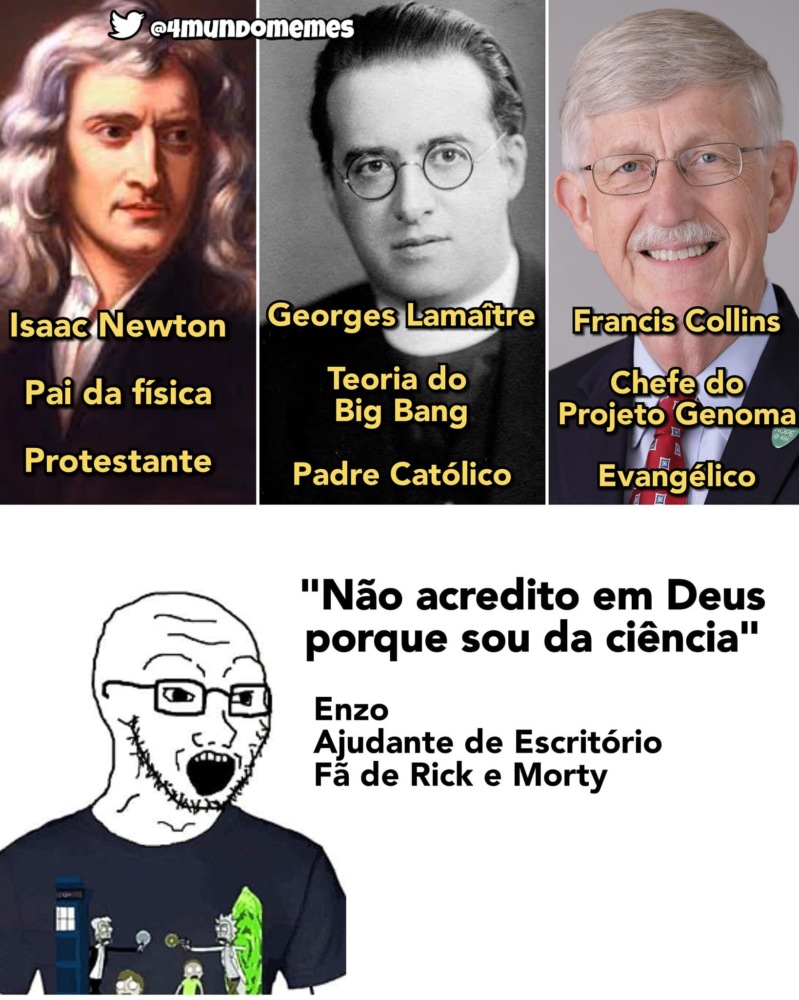
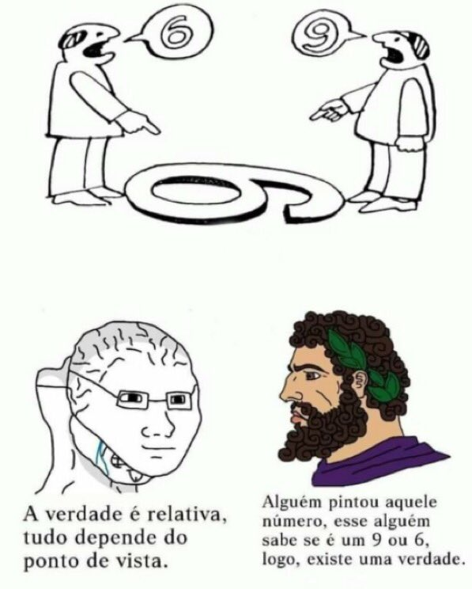

O indivíduo que não quer aprender já nasceu burro. Aquele que possui amor pelo conhecimento já nasceu inteligente. Se um indivíduo não sabe nada, mas quer aprender, ele é sábio por natureza. Porém, aquele que acha que sabe, mas não tem vontade de aprender, é ignorante por natureza. Nenhum professor pode educar quem não quer aprender e ninguém que quer aprender pode ser impedido por aqueles que não querem educá-lo.
Eduardo Kenji 20/09/2024 18:16
Este ano termino a escola. Eu nunca fui muito de criar grandes laços afetivos com as pessoas à minha volta e isso me dá o benefício de não estar tão impactado de sair desse círculo social em que a escola nos coloca, porém creio ainda que será meio estranho viver uma vida em que eu não seja obrigado a ir à escola, mas, é aquilo, nós não podemos nos prender a nada nesta vida, pois tudo acaba. Toda árvore ferverá em chamas, todo edifício ruirá em pó, toda vida será ceifada.
Eduardo Kenji 19/09/2024 21:20
Muitos militantes esquerdistas vivem pregando o respeito e a tolerância, porém são completamente desrespeitosos e intolerantes com aqueles que não compartilham de seu ideais. Eu já me cansei de ver lgtvs tirando sarro e tentando humilhar um sujeito porque o carinha não apoia a seita deles. E os caras que se declaram comservadores, ou até mesmo apenas de direita, só falta darem cadeirada nos conservadores. Se você quer ser respeitado, respeite primeiro, senão você, além de ser hipócrita, vai estar apenas confirmando para os que não apoiam seu movimento que ele realmente não vale de nada e não se leva a sério. Seus amiguinhos progressistas podem até bater palmas quando você humilha um carinha com uma ideia diferente da sua, mas pode ter certeza que aquele carinha não vai mais levar a sério seu movimento e só vai ficar com ranço ante ele.
Eduardo Kenji 19/09/2024 9:50
Eu estava usando todo um aparato tecnológico para entrar no X quase que completamente anônimo, como forma de segurança, porem demora muito para ativar todos os programas que eu estava usando, e pela forma que andam as coisa, aparentemente o Ditador supremo do Brasil não vai chegar a multar ninguém por usar VPN, então eu voltei a utilizar normalmente, só com VPN, com minha conta pessoal mesmo. Claro que existe uma chance de dar ruim, mas aparentemente a chance é pequena, então vou dar uma arriscada.
Eduardo Kenji 14/09/2024 16:26
Este site não é um noticiário, não é um blog e muito menos um diário. Ele é um bloco de anotações. Anotações não precisam seguir exatamente o que você pensa porque elas próprias são uma tentativa de formular um novo pensamento, mas sempre seguem o que você está pensando no momento ou ultimamente. Esses posts todos são anotações do dia-a-dia. Eu gosto muito de filosofia e por isso eu sempre faço anotações de todas as ideias que eu tenho, dos meus "insights". É claro que eu poderia escrever em um caderninho, mas em formato de site é bem mais bacana, e talvez seja agradável para aqueles que também gostam de anotações vizualizarem anotações de outras pessoas, por isso deixo público na internet. Eu também escrevo sobre coisas alheias à filosofia, mas o resto também são anotações de ideias de matemática, eletrônica, geometria, de piadas, de política, etc. Gosto muito de anotações, elas ajudam imensamente a desenvolver as minhas ideias. Eu sempre escrevo rascunhos de pensamentos, coloco aqui, depois vou reescrevendo e criando novas linhas de pensamento sobre o assunto, até que eu formo a minha ideia de forma bastante sólida.
Eduardo Kenji 12/09/2024 10:47
A maioria dessa igrejas "church" de parede preta que fazem showzinhos em lugar de pregação são adeptas da teologia da prosperidade. Elas mancham a imagem das igrejas sérias e seus seguidores mancham a imagem dos seguidores de Cristo.
Eduardo Kenji 11/09/2024 18:29
O materialismo moderno criou raízes tão profundas na sociedade que até mesmo locais que se dizem ser igrejas pregam uma teologia materialista, a teologia da prosperidade. Os cristãos não devem ter apego pelos bens deste mundo, pois são todos passageiros, mas o que as igrejas que pregam a teologia da prosperidade dizem é que aquele que as seguir ganhará um aumento no salário, subirá de cargo, ficará milionário ganhando rios de dinheiro. Jesus nunca pregou isso. É claro que aqueles que estão em Cristo podem receber milagres e até mesmo melhorar suas vidas ao passar a seguir as escrituras, uma vez que o estilo de vida pregado nas escrituras é um estilo de vida propenso à prosperidade, mas deve-se saber que isso é graça imerecida da qual Deus não prometeu dar a quem o segue, pois o que ele prometeu são riquezas no céu e não na terra(o que vamos combinar que é muito melhor).
Mateus 25:23
"O senhor respondeu: 'Muito bem, servo bom e fiel! Você foi fiel no pouco, eu o porei sobre o muito. Venha e participe da alegria do seu senhor!'
Eduardo Kenji 11/09/2024 18:27
A melhor forma de fazer uma mudança cultural e ideológica é a partir da propaganda em todos os meios possíveis, partindo dos meios mais influentes na sociedade. Primeiramente é necessário tomar os centros de ensino ideologicamente, pois não há cidadão que não passe em algum momento da vida na escola e neste momento é justamente quando a mente está mais aberta a ideias novas e quando o caráter está sendo formado. Não digo "tomar" no sentido de tomada armada, mas no sentido de tomada ideológica, inserir tantos simpatizantes de uma mesma ideologia nas escolas que a ideologia se torne um consenso e quem não concorde tenha medo de se opor a todos. Quanto mais professores compartilharem de uma ideia, maior será a quantidade de alunos que irá aderir à mesma ideia. Após isso os meios de comunicação. A partir do momento que todos os jornais repetem em uníssono a mesma ideia, então toda a sociedade repetirá automaticamente. Somente após tudo isso se deve tomar os centros políticos e militares. Não adianta colocar alguém no poder sem antes preparar o ambiente para isso, senão, tão logo esse alguém subir ao poder, irá cair.
Um exemplo de que isso funciona são as faculdades públicas do Brasil. Não existe uma pessoa lá que não seja de extrema esquerda.
Era exatamente isso que o grande filósofo marxista Antonio Gramsci pregava:
"seguida a sua receita, todo mundo seria socialista sem saber."
O jornal Brasil Paralelo comentou certa vez:
'Modificar a linguagem, o sentido das palavras, enfraquecer personagens heróicos, deturpar a história, contaminar narrativas já aceitas… todos esses exemplos podem ser vistos como a prática do que ele pensou. A finalidade é fazer morrer o que se conhece como bom, belo e verdadeiro.
A expressão “hegemonia cultural de Gramsci”, nesse contexto, significa a dominação ideológica sobre a multidão, sem que ninguém perceba. Ganha quem tiver o maior poder de manipulação: jornalistas discretos, professores, escritores, políticos e artistas em geral.
Para uma sociedade se tornar socialista gradativamente, seria preciso mudar os valores culturais e morais, até finalmente chegar nos valores políticos.'
Eduardo Kenji 09/09/2024 13:17
Os conservadores não buscam conservar as coisas exatamente como estão, de forma retrógrada, mas buscam, em verdade, conservar o que eles creem ser bom, e progredir no que está ruim. Acreditamos que a religião cristã é boa, e buscamos conservá-la, sem progredir para algo ruim. Os valores morais a mesma coisa. A base moral judaico-cristã do mundo ocidental está correta e devemos conservá-la. Creio que os progressistas creem que tudo que é novo é progresso e tudo o que é antigo é retrogrado. Se eles consideram como um progresso, a título de exemplo, o movimento feminista radical, então nós não queremos esse "progresso" nesse caso. Mas apoiamos os progressos científicos para descobrir novas curas para doenças e etc. A modernidade mesmo trouxe muitos retrocessos para a sociedade.
Eduardo Kenji 08/09/2024 22:20
Miguel de Cervante foi um grande intelectual que imprimiu seus valores morais nas páginas da sua grande obra Dom Quixote De La Mancha. O conhecimento de Cervantes, em livros filosóficos, religiosos, históricos, etc. é tamanho que Dom Quixote está cheio de reflexões sobre a vida e sobre o mundo muito profundas. Uma delas é está que a mim me completamente discreta e clara:
Olha, Sancho: se tomas por meio à virtude e te empenhas em praticar atos virtuosos, não há para que ter inveja aos nascidos príncipes e senhores; porque o sangue se herda e a virtude se adquire. E vale por si só a virtude o que não vale o sangue.
Eduardo Kenji 08/09/2024 8:44
Todo sujeitinho comunista que chama aos outros de antidemocráticos ou coisa do tipo é, em todos os casos, um vigarista. Karl Marx e Friederich Engels – e posteriormente Vladimir Lenin - utilizaram o termo “ditadura do proletariado” para descrever o Estado da classe trabalhadora durante a transição ao comunismo, após a derrubada do estado burguês.
Marx e Engels escreveram no Manifesto Comunista que:
"seus fins só podem ser alcançados pela derrubada violenta de todas as condições sociais existentes".
Todo comunista que se preze já leu o Manifesto Comunista, então não há como não terem ciência dessa passagem. Por isso pergunto-lhes, como podem ser tão hipócritas a ponto de falarem defender a democracia tendo um plano para acabar violentamente com ela? O que é descrito no Manifesto é claramente uma guerra civil. Por causa disso, considero até mesmo o presidente do Brasil, Luiz Inácio Lula da silva, um claro antidemocrático, pois além de apoiar ditaduras socialistas ao redor do mundo, como a de Maduro, ele também já afirmou que pensa em formas viáveis de implementar o socialismo no Brasil. O socialismo é descrito em muitos livros marxistas como uma passagem para o comunismo, sendo o comunismo o seu fim último. Como frisava Lênin:
“O socialismo deve inevitavelmente transformar-se gradualmente em comunismo...”
É claro que posteriormente a Marx surgiram outros pensadores que revelaram uma ideia inovadora, a socialização gradativa, onde ao invés da tomada armada dos meios de produção, o capitalismo iria se tornar gradativamente ao longo de anos um socialismo, de forma pacífica. Contudo, os próprios ideais socialista iriam tornar o estado uma ditadura de uma forma ou de outra. Além de que quase que todo o baixo clero do comunismo, os carinha que nem mesmo pertencem à classe proletariada e só leram o Manifesto para se enturmar com os amiguinhos comunistas e se sentir parte do movimento, não leram essa nova literatura comunista, mas somente o Manifesto, porque é curto. Ademais, acredito que o próprio Brasil possa estar passando por essa socialização progressiva, pois agora nós temos presos políticos e o estado pode censurar qualquer pessoa com o pretexto de que ela é "antidemocrática", "um perigo para estado" ou "divulgadora de fake news"(o que nem mesmo é crime de acordo com a lei). E, com o aumento de preços e impostos, o estado fica cada vez maior, e o pobre fica cada vez mais dependente do estado.
Nem todo aquele que se diz democrático realmente é, alguns só usam a palavra como um floreio para seus ataques à liberdade. Exemplo claro disso é que o nome oficial da Coreia do norte é república Popular Democrática da Coreia.
Eduardo Kenji 07/09/2024 19:14
Para aprender qualquer coisa que seja, o mais importante é sempre:
1° querer aprender: se você não quiser do fundo do seu coração aprender alguma coisa, de certo você não vai. Em contrapartida, todo aquele que realmente tiver motivação, vontade e amor pelo conhecimento, vai aprender, mais dia menos dia.
2° perseverança:
Muitas vezes, no primeiro dia de estudo sobre um tema do qual você nunca estudou a fundo, você vai pensar "isso não é para mim" ou "eu não nasci para isso" ou mesmo "esse definitivamente não é o meu forte", porém, após uma semana, duas, três, um mês de estudo, você vai ver que aquele bicho de sete cabeças na verdade não é tudo isso, e que aprender é fácil.
Acredito que qualquer um que pegue um assunto e disponha seu tempo para aprendê-lo, tendo real vontade de saber sobre o assunto(e nota-se o "saber sobre o assunto", pois não incluo aqueles que estudam um assunto para passar em concurso ou etc. e que tenham vontade de passar e não de saber pelo conhecimento) poderá aprender, mais dia menos dia.
Eduardo Kenji 07/09/2024 12:05
Para melhorar a clareza das datas do site, usarei o formado 24H ao invés do 12H para os próximos textos. Graças à confusão que está o código deste site, os posts anteriores a esse continuarão em formato 12H
Eduardo Kenji 07/09/2024 12:03 PM
Toda substância possui uma forma e uma materia, como bem observado por Aristóteles. A título de exemplo, um cachorro é constituido meterialmente de carne, ossos, etc. Porém, se eu juntar um amontoado de carne, ossos, etc. eu não cou formar um cachorro, vou formar tão somente um amontoado de carne. A forma faz a materia ser um algo. A matéria representa a potência, pois uma mesma matéria, como a madeira, pode ser hoje uma arvore e amanhã uma cadeira, mas a forma é o ato, pois a forma cadeira não pode ser outra senão uma inalterável. A forma é aquilo que dá nome a uma substância e faz dela ela mesma. A forma do homem é a alma, pois um corpo sem alma não é um homem.
Eduardo Kenji 06/09/2024 9:46 PM
Sinceramente, uma das melhores coisas que alguém pode fazer na vida é ler o livro de eclesiastes da Sagrada Bíblia, sendo cristão ou não, pois os conhecimentos passados por Salomão, filho de Davi, que reinou sobre Israel, e que, podendo de tudo pedir a Deus, pediu a sabedoria, o que Deus o concedeu. No livro Salomão fala sobre a breviedade da vida e de como tudo que fazemos é tão sem sentido e baixo. Ele fala sobre como tudo nunca muda e como tudo continua sempre o mesmo de baixo do sol.
recomendo severamente para aqueles que buscam o saber e possuem vontade de aprofundar seus conhecimentos. Não é querendo pagar pal para o livro sagrado da religião que eu sigo, mas esse livro é realmente uma obra de arte da literatura. Todos os livros da Bíblia são bons, mas, em questão de literatura e de saber, eclesiastes e o evangelho de João se sobressaem.
Nota: eclesiastes é diferente de eclesiástico. Eclesiástico é um livro deuterocanônicos considerado válido apenas pelo católicos.
Eduardo Kenji 06/09/2024 6:25 PM
A esquerda parece ter um ideal meio estranho do que seria igualdade e tolerância. Com o propósito de formar uma sociedade mais igualitária eles buscam segregar as pessoas, separar em grupos e pôr um como inimigo natural do outro. Já no início do marxismo eles já segregavam as pessoas, separando em um lado o proletariado, representando os oprimidos, e do outro os burgueses, representando os opressores. Desde então a segregação e o preconceito virou lema do movimento esquerdista. Agora o homem representa o opressor e a mulher o oprimido, os hetero cis os opressores e os lgbtjsh os oprimidos, os magros opressores e os gordos oprimidos. Porra, pessoas são pessoas, foda-se a cor do fulano, foda-se a sexualidade do Beltrano, nós não temos que tratar um gay de forma pior que ninguém por sê-lo, mas também não temos que tratá-lo melhor. Não dá para ver as pessoas pelo seu caráter e não pela sua cor ou orientação sexual? Ninguém é malvadão só por ser branco, e ninguém é bonzinho só por ser negro.
e sobre o racismo estrutural, que pregra que todos somos racistas sem perceber, ora, eu te pergunto e peço que pelo amor de Deus me responda: qual ideia racista eu tenho? me diga apenas um pensamento racista que eu tenho. Eles não respondem a esse tipo de pergunta, mas antes preferem dizer que "você tem sim, mas você não sabe", mas vamos ser sinceros, se você poder sair por aí dizendo que tal ou qual pessoa tem tal pensamento que ela nunca pronunciou e ela mesmo afirma não ter, mas que você têm convicção profunda de que ela tenha e não saiba, então você pode acusar as pessoas de qualquer crime, não precisa provar mesmo né?
Como que alguém pode dizer que sabe mais dos meus ideais do que eu mesmo? Eu nunca fui influenciado por nenhuma pessoa e nenhum desenho nem nada a ser racista, então como pode a sociedade ter me feito racista? Eles que devem ter pensamentos racistas e, para retirar sua culpa e peso na consciência, dizem que todos também têm.
Eduardo Kenji 06/09/2024 10:19 AM

Esse meme está completamente correto. Eu só acrescentaria o Nikola Tesla, criador da corrente alternada, usada para transmitir energia a todas as casas, e Leibniz, um grande filósofo e matemático que criou o cálculo simultaneamente com Isaac Newton. Inclusive, a religiosidade de Newton é meio questionável já que ele acreditava em alquimia e que era possível prever a vinda de Cristo matematicamente, mas, de qualquer forma, ele era cristão.
"Quanto ao dia e à hora ninguém sabe, nem os anjos dos céus, nem o Filho, senão somente o Pai."
Mateus 24:36
Eduardo Kenji 05/09/2024 9:43 PM
Certa vez um homem sábio estava a ser difamado pelos que não gostavam dele. Um de seus seguidores disse-lhe:
senhor, estão a difamá-lo, não faras tu nada contra eles?
Então disse o sábio: se me maldizer os faz felizes, por que eu os impediria de fazê-lo?
Eduardo Kenji 05/09/2024 8:49 PM
Céus e terra passarão, nada é constante, tudo é somente momentâneo, não se prenda ao momento. Por que buscar a felicidade se a felicidade também se corrompe? para que buscar "aproveitar a vida" se a vida também vai se findar um dia? Cada dia se inicia e se finda, e nós corremos para fazer o que temos de fazer, e no próximo dia fazemos tudo de novo, e de novo, e de novo, e cada dia fazemos o mesmo, de modo que não há nada de novo debaixo do sol. Desperdiçamos nosso tempo de vida, nosso suspiro de vida que se esvai como que em um sopro, para buscar ao que é vão e corruptível, e nos esquecemos do que realmente importa. Alegre-se nos momentos bons e nos ruins, pois tudo corre para um mesmo fim. O sofrimento momentâneo gera a felicidade posterior.
Eduardo Kenji 05/09/2024 8:29 PM
O ato de acasalamento humano é uma das coisas que mais leva as pessoas à perdição, pois muitas pessoas são escravas dele, muitos acreditam que o sexo casual vai trazer a felicidade que tanto procuram, mas, pelo contrário, a felicidade somente foge daqueles que buscam o prazer acima de tudo, pois não há sentido em tudo isso, e você não pode se enganar para sempre, um hora você percebe que isso tudo é fútil e vão, e se não se arrepender logo o vazio na sua alma somente vai aumentar e o acumulo de muitas relações vai somente te levar à solidão. Não busque algo vão, pois tudo isso vai acabar quando, no futuro, você olhar para trás e pensar: "que merda que eu fiz, eu desperdicei minha vida, fui escravo de mim mesmo, fui o réu e o juiz que me condenou". O acasalamento humano não é bom, você não se torna uma pessoa melhor ao executá-lo, mas também não é ruim quando feito apropriadamente, pois até mesmo melhora a relação entre os casais e melhora seu ânimo, mas poucos são os que possuem saber para não cair em desgraça por causa disso. Acredito naquilo que dizia o sublime professor Olavo de Carvalho:
Amar é querer o bem para aquele que amamos.
Não há nada de amor nisto, mas somente egoísmo, o completo oposto. Sinceramente, meu plano de vida se tudo der certo é morrer como um CHAD asceta estoico, mas obviamente não creio que todos devam seguir por esse caminho, mas sim que deve-se ter sabedoria e boa temperança para saber tomar decisões das quais se orgulhe no fim da vida, quando olha para trás em retrospectiva.
Gálatas 5 16-17:
Por isso, digo: vivam pelo Espírito, e de modo nenhum satisfarão os desejos da carne. Pois a carne deseja o que é contra o Espírito; o Espírito, o que é contra a carne. Eles estão em conflito um com o outro, de modo que vocês não fazem o que desejam. Todavia, se vocês são conduzidos pelo Espírito, não estão debaixo da lei
Gálatas 5 13:
Irmãos, vocês foram chamados para a liberdade. Contudo, não usem a liberdade para dar ocasião à carne,
Eduardo Kenji 05/09/2024 8:02 PM
Algo muito deplorável que passou a ocorrer a pouco tempo, por milhares de motivos que mais tarde eu posso explicar em outra postagem, é que muitas pessoas passaram a ter medo de expressar suas ideias, a expressar sua fé a se posicionar e defender seus ideais, pois há muitas gentes preconceituosas e maliciosas que propagam ódio gratuito contra quem não concorda com elas, e ainda se dizem guardiãs da moralidade e do respeito, mas somente respeitam quem concorda com elas, pois o resto que se foda. Um dos efeitos disso pode-se ver em pessoas que se dizem crentes em alguma religião ao mesmo tempo que a negam apenas para não deixar um carinha aleatório ofendidinho. Já vi muitas pessoas que dizem, por exemplo, acreditar em Deus mas diz que respeita as outras religiões e acredita que elas também estão corretas "pois todas levam ao mesmo Deus". Ora, eis que nas sagradas escrituras está escrito:
Isaías 45:5-6 NTLH. “Eu, e somente eu, sou o SENHOR; não há outro deus além de mim. Embora você não me conheça, eu lhe dou força para lutar. Faço isso para que, de leste a oeste, o mundo inteiro saiba que além de mim não existe outro deus."
como alguém se diz cristão e fala uma barbaridade dessas? Se você realmente crê na Bíblia você não pode contradizê-la e falar que todas as religiões estão corretas, ou que todas elas levam ao mesmo Deus, pois não levam, somente o Senhor é Deus. É claro que nós devemos ter tolerância com as outras religiões, mas não devemos jamais dizer que elas também estão corretas, pois isso iria contradizer a Bíblia. Esse tipo de pensamento é fruto tanto do medo de confessar a Cristo, o que leva ao carinha a negar a Deus para não ofender um fulano, tanto também, e talvez até mais, do fenômeno dos crentes que semente se dizem crentes por medo da morte e não seguem nada das escrituras, e pensam que indo na igreja e dando o dízimo pro pastor ele vai ser salvo, mas não é o pastor que vai te salvar me filho pois não foi o pastor que desceu dos céus para te salvar. Esse fenômeno é muito característico das igrejas evangélicas neo-pentecostais(embora exista em outros ramos do cristianismo) onde se falam em línguas e onde a leitura das sagradas escrituras é um ato desprezado.
Nota: para evitar confusões, vale ressaltar que com tudo isto eu não quero dizer que eu sou o detentor da verdade, longe disso, mas quero em verdade dizer que se alguém realmente acredita nas sagradas escrituras essa pessoa tem que acreditar também que o Senhor é o único deus. Eu não estou impondo isso a ninguém, mas é o que eu acredito e eu guio a minha vida a partir disto, não vou te encher o saco caso não acredito no mesmo que eu, mas, se me perguntar algo sobre, não vou mentir dizendo que acredito que todas as religiões são iguais, como o fazem os hipócritas.
Eduardo Kenji 05/09/2024 6:43 AM
Outra daquelas perguntas vis das quais os filósofos acabam sendo incumbidos de responder:
"se uma árvore cai no meio da floresta e ninguém escuta, ela fez barulho?"
essa é fácil, se por som compreendermos as ondas sonoras que o objeto árvore faz ao cair, então sim fez som, mas uma vez que não há ouviente, ninguém escutou. O som como compreendemos é uma interpretação dos sentidos humanos das ondas sonoras que nos são exteriores, ele não existe fora de nós, mas o som enquanto onda existe exteriormente, logo, houve som, mas esse som não foi escutado.
Eduardo Kenji 05/09/2024 6:36 AM
Os filósofos contemporâneos infelizmente precisam perder seu tempo a responder problemas óbvios que fazem Sócrates revirar no túmulo, como:
A verdade é verdadeira? ou, a verdade existe?
Ora, respondamos, pois, logo a está pergunta fútil antes de prosseguirmos. Muitas pessoas hoje em dia estão realmente contaminadas com preceitos relativistas que as levam a crer que a verdade é relativa, que eu tenho a minha verdade e você tem a sua, e por isso eu tenho que respeitar sua ideias vis porque estas são as "suas verdades" e eu tenho as minhas. Mas isso realmente não faz o mais mínimo sentido, pois, pense comigo: uma formiga é grande? a resposta é clara: depende do observador, e nesse sentido é relativo, pois uma formiga pode ser grande comparada a um grão de areia, ou pequena em comparação com um prédio, então na teoria ela seria grande e pequena ao mesmo tempo? Não, definamos um ponto de referência, pode ser um prédio, em comparação com um prédio a formiga é pequena? Sim, absolutamente, a verdade é somente uma. É claro que existem prédios pequenos, mas a propria ideia de prédio denota um edifício alto, a não ser que estejemos falando de um mini prédio, mas eu estou falando de um prédio normal. A verdade pode ser relativa a um ponto de vista quando um ponto de referência não é indicado, é como perguntar qual a cor da parede sem especificar de qual eu estou falando, existem muitas paredes no mundo e de muitas cores. Mas se eu pergunto qual a cor desta ou daquela parede, não há como haver duas respostas diferentes. É claro que nós nem sempre indicamos um ponto de vista em conversas do dia-a-dia mas geralmente o ponto de vista pode ser estabelecido pelo próprio contexto de uma conversa, por exemplo: se eu pergunto a alguém se uma formiga qualquer é pequena, eu obviamente estou querendo dizer pequena em relação a ela, e não a um grão de areia, a não ser que eu acrescente " a formiga é pequena em relação a um grau de areia?", mas somente "a formiga é pequena" subentende-se que seja em relação a você. Um ser humano é maior que uma formiga, mas e se algum dia uma formiga sofrer uma mutação genética e nascer maior que um humano? então ainda assim um formiga é menor, porque eu estou falando de uma formiga comum e não de uma formiga mutante. Quando nos refermos aos passaros um criaturas que voam, não estamos errados, embora alguns passaros pordem ser debilitados fisicamente e por isso incapazes de voar, porque estamos falando sobre os passaros de forma generalizada e não da minoria que não voa. Do mesmo modo o homem é um ser racional, embora existam pessoas que por deficiências intelectuais não pensem. Neste último caso nós temos de pensar mais a fundo, e procurar qual a essência humana, qual é a forma do homem, o que torna um homem um homem. Eu acredito que forma de ser humano, aquilo que nos torna homens e que se nos faltasse não o seriamos, é a alma humana, e não o corpo, por isso se alguém não pensa mas possui uma alma humana eu o considero um homem, embora eu não tenha ciência se existe forma de haver alma sem pensamento.

Eduardo Kenji 04/09/2024 8:37 PM
Jesus Cristo andou sim com meretrizes e ímpios, mas não por que ele era baladeiro ou "mente aberta", mas sim porque ele queria tirá-los desse maus caminhos. Ele jamais aprovou o pecado, mas tinha amor pelo pecador e buscava retirâ-lo do pecado. Se unir aos indecentes não é conveniente àqueles que são conhecedores da verdade, pois eis que está escrito: Digas com quem andas que eu dir-te-ei quem és.
Eduardo Kenji 04/09/2024 1:16 PM
Olha, existe algo que tenho para mim que é a afirmação mais importante existente, irrefutável e que eu procuro sempre utilizar para guiar a minha vida, a saber:
Se Deus não existe, tudo o que fazemos é vão. Se Jesus não desceu dos céus para nos redimir dos nossos pecados, então permanecemos no pecado. Se não há algo acima deste mundo, então nada faz sentido e vamos todos morrer.
Digo que esta afirmação é irrefutável pois mesmo os ateus mais radicais concordam comigo nisto: de que se Deus não existe nada faz sentido.
Eu aceito se você não quiser acreditar em Deus ou que não há nada além da matéria, você tem todo direito, mas você não pode discordar disso.
Por isso eu prego que nada neste mundo pode nos satisfazer, a alegria deste mundo é passageira, nada faz sentido por si só aqui mas apenas enquanto aponta para a eternidade. Este mundo não vai melhorar, tudo só tende ao mal e as pessoas tendem ao egoísmo, o mundo jaz no maligno. Jamais ligue para o que os outros dirão de você, pois todas elas também morrerão um dia, e após isso elas terão de conhecer a reta justiça, afinal antes de você o mundo odiou ao filho do homem, Jesus, o Cristo, por isso se alegre em grande regozijo todas as vezes que te perseguirem pela luz que reluz na sua alma, pois foi escrito que "a luz resplandece nas trevas, e as trevas não a compreenderam". Jesus Cristo é a luz, e todo aquele que o segue em verdade é um espelho que testifica sua luz.
Alegre-se sobremaneira por cada pingo de lágrima derramado por causa da reta justiça, pois é preferível morrer a praticar o mal e abraçar à irracionalidade.
Filipenses 1:21 diz: "Porque para mim o viver é Cristo, e o morrer é ganho".
É preferível morrer por aquele que morreu por vós do que ser feliz nesse mundo amaldiçoado, em que não se alcança a felicidade, pois a felicidade aqui é apenas uma ilusão que em pouco tempo se desfaz.
Como bem dizia Agostinho: "Fizeste-nos, Senhor, para Ti, e o nosso coração anda inquieto enquanto não descansar em Ti"
Não ajunteis tesouros nesta terra, onde a traça e a ferrugem tudo consomem, mas antes busquem se desprender dos valores terrenos
Esta escrito que Deus criou ao homem à sua imagem e semelhança, a imagem de Deus os criou, mas também foi dito que Deus moldou a Adão do barro(terra, pó) e o soprou o sopro da vida. Por isso acredito que nosso corpo material não é imagem de Deus, pois Deus não é material e não possui corpo, e por isso nosso corpo que veio do barro retorna ao pó, mas a nossa alma, que vem do sopro da vida, é a imagem e semelhança de Deus, pois é invisível, eterna, e indestrutível (indestrutível pois está dito que aqueles que não alcançarem a salvação queimarão no lago de fogo e enxofre para sempre, e não que eles vão ser destruidos absolutamente, pelo que eu li). Nossa alma é eterna, mas o corpo é temporário, o corpo nos prende à materia, nos prende ao limite, a carne é fraca. A alma é o único passarinho que defende a sua gaiola. Nossa gaiola é a matéria.
Muitos creem por medo da morte, é verdade, mas eu não creio em Deus por que eu tenho medo da morte, mas sim porque faz sentido, afinal como o algo pode ter surgido do nada? como pode o ser surgir do não-ser? Acredito simplesmente que não há não-ser. Somente a verdade pode nos libertar das baixezas desta vida, e Jesus Cristo é o caminho, a verdade e a vida, e ninguém vai ao Pai senão pelo filho.
eis aqui um versículo de imensa sabedoria pronunciada por Jesus, o Cristo(Mateus 34 a 39):
Não cuideis que vim trazer a paz à terra; não vim trazer paz, mas espada;
Porque eu vim pôr em dissensão o homem contra seu pai, e a filha contra sua mãe, e a nora contra sua sogra;
E assim os inimigos do homem serão os seus familiares.
Quem ama o pai ou a mãe mais do que a mim não é digno de mim; e quem ama o filho ou a filha mais do que a mim não é digno de mim.
E quem não toma a sua cruz, e não segue após mim, não é digno de mim.
Quem achar a sua vida perdê-la-á; e quem perder a sua vida, por amor de mim, achá-la-á.
PS: escrevi este texto meio na pressa, mais tarde eu termino minha argumentação de forma mais razoável.
Eduardo Kenji 01/09/2024 10:42 PM
A verdade é eterna, as pessoas não, o dinheiro não, eu não o sou. Buscar o saber é buscar a única coisa constante na vida. É buscar pela única coisa realmente importante. Vivamos e comamos, pois amanhã morreremos, ou, aprendamos e busquemos pela elevação, pois amanhã morreremos. Ter amigos é importante, ter dinheiro é importante, cuidar de si é importante, mas somente para o seu bem estar nesta vida, vida esta que se esvai, por isso sacrifique de tudo, mas não permita que as leviedades desta vida te afastem das verdades eternas e irrevogáveis, somente isso importa absolutamente.
Eduardo Kenji 01/09/2024 10:17 PM
Sobre o movimento lgbtuvwxyz+, eis aqui a minha opinião sobre o assunto:
Primariamente, o termo sexo sempre nos foi usado, enquanto sociedade, para nos referir ao homem e a mulher, para nos referir ao xy e ao xx, biologicamente, cientificamente e socialmente. Contudo, com o início do movimento esquedista a favor das "minorias oprimidas" e o crescimento da comunidade colorida, cunhou-se o termo gênero para se referir ao sexo que atrai uma pessoa. Esse é um termo novo e que, inclusive, acredito que não faz muito sentido, já que gênero sempre foi empregado em palavras, palavras possuem gênero, pessoas não, mas agora o termo adquiriu esse novo sentido. Enfim, o gênero de uma pessoa é a preferência dela ao se relacionar com outras, é apenas uma preferência, não creio ser nada além disso. Até aqui eu concordo que possam existir pessoas que possuem uma preferência diferente do natural, mas minhas discordâncias com o movimento começam a partir do ponto em que mudaram a antiga sigla lgbt para lgtbqiandhsjhj..... pois para mim só podem existir 3 gêneros, com o perdão da palavra, os viados e lesbiscas (contanto os dois como somente um), os sapatões e os bis, não existe nada alem disso. Pois, sendo o gênero uma preferência de sexo, como alguém pode escolher se relacionar com algo além de xx, xy e os dois, não tem como, absolutamente. Poderia se incluir quem não gosta de nada também, mas nesse caso eles tem preferência, somente não a praticam, pois não querem.
Outro problema óbvio é o das crianças trans e criança de outro gênero, pois uma criança não tem que pensar em preferência para se relacionar, pois criança não tem que se relacionar romanticamente e muito menos sexualmente com gente alguma. E para piorar, uma criança trans, ao transicionar, precisa passar por cirurgias irreversiveis que irão mudar o corpo dela e fragilizá-la para sempre. Uma criança não pensa em sexo, mas um adulto pensa, e imagina quando essa criança transicionada virar adulta e perceber que ela preferia se relacionar com pessoas do sexo oposto? e quando essa criança crescer e perceber que quer ter um filho? afinal crianças não costumam pensar nesses assuntos, mas elas crescem um dia.
O meu respeito pelo movimento foi completamente obliterado quando os lgtvghhj inventaram de criar a linguagem neutra. Primeiro que não existe gênero neutro, todos possuem preferência, e quem não possue por nenhum dos sexos em específico gosta dos dois, ou de nenhum, como discutido acima. Não há sentido nenhum em querer impor uma linguagem tão horrível à população de todo um país. Se você quer dar a porra do cu, pode dar, só não vem me encher o saco caralho. É claro que não se deveria dar tanta importância a uma idiotice dessas, mas quando você vê que existem pessoas que levam isso a sério e até mesmo pessoas do governo começaram a utilizar, você para de rir dos carinha e passa a ver que eles são revolucionários. Eles não querem um nova linguagem somente por respeito ou coisa do tipo, pois ao fazê-lo estão a desrespeitar todo o resto da população que utiliza o português, mas eles querem propagar uma ideologia, pois o uso da linguagem neutra pressupoem que o falante concorde com alguns preceitos esquerdistas básicos, como o de que existem pessoas de gênero neutro, o que é já sabido que não existe.
E sobre o orgulho... vá à casa do caralho o orgulho. Eu não tenho nem orgulho das minhas conquistas pessoais, imagina se eu tivesse orgulho de dar o cu. A passeata do orgulho mesmo só serve para gente maluca ficar andando por aí como um selvagem, desprovido de roupas e sem barreiras morais. A criação dessa passeata foi o ápice do movimento hedonista. Como alguém leva isso a sério? a resposta é, muitas, muitas pessoas levam a sério, e por isso o brasileiro está e sempre estará na lama.
Por fim, gostaria de dizer que eu apoio os verdadeiro lgbts que estão a se relacionar sem ficar enchendo o saco de todo o resto da população, mas eu não possuo respeito algum pela militância lgtv. Também queria dizer que grande parte dessa galera somente são adolescentes esquerdistas tentando se encaixar em algum grupo e serem os "diferentes", "desconstruidos" e aqueles que "rompem com os padrões tradicionalistas", não todos, mas uma grande parte, eles somente querem se sentir os diferentões, ou aqueles que defendem uma grande causa, ou somente se inturmar mesmo, se sentirem adultinhos. Eles buscam me refutar dizendo que "ah mas por que eu iria querer ser odiada pelos meus pais e receber preconceito da sociedade", mas esquecem que os emos também eram motivo de ridicularização outrora, mas pela ânsia de ser os diferentes e se inturmar sendo contra os padrões sociais vigentes eles se vestiam como esquisitões (nada contra os emos, alguns são daoras pô), além de que qual tipo de adolescente não sente uma vontade insana de discordar dos pais e abraçar aos amigos? A adolescência é isso, é quando o adolescente passa a odiar ao mais fraco, que o ama, e passa a amar o mais forte, que o odeia, e muitas vezes o mais forte é o seu círculo social e o mais fraco é a família. E quanto ao preconceito da sociedade... pelo amor! toda sociedade apoia essa gente, somente meia dúzia de velinhos ainda possuem um resquício de preconceito, mas é a vida, nem sempre podemos agradar a todos, tenha respeito por esses velhinhos e escute o que eles tem a dizer, e espere que eles façam o mesmo e, se não fizerem, paciência, não é como se fosse o fim do mundo.
nota para mim mesmo: pelo amor de Deus, revise esse texto, o exemplo do emo ficou risível.
Eduardo Kenji 01/09/2024 8:02 PM
Certa vez Aristóteles escreveu algo que, pela sabedoria incutida nas palavras, muitas vezes citei neste site. A saber:
Que alguns homens são escravos por natureza.
Muitos interpretam mal essa citação, talvez até mesmo pensando ser uma afirmação racista, mas, primeiro que na Grécia antiga os próprio gregos, aos deverem para outro grego ou por motivos semelhantes, serviam como escravos a outro grego, então não há nada de racial nisto, e, em segundo, ele quis dizer com isso, obviamente, que algumas pessoas possuem uma mentalidade tão debil que ao primeiro ditador que tentar a escravizar ela já se ajoelha e adora ao carinha.
Eu nunca cheguei a perceber, mas isso pode se estender ad infinitum para contemplar tudo o mais. Pois é notável que também existem pessoas que são boas por natureza, pois possuem uma inclinação natural à bondade, e pessoas más por natureza, pois possuem inclinação natural ao mal. Também existem aqueles que são sábios por natureza, não porque nasceram sábios, mas porque nasceram amantes da sabedoria e buscadores da verdade, enquanto aqueles que são ingênuos por natureza não nasceram, com o perdão da palavra, burros, mas nasceram sem vontade nenhuma de aprender. Isso tudo tem a ver com o caráter do indivíduo e suas vontades. Aquele que é ingênuo por natureza jamais vai aprender nada, pois mesmo que o melhor professor do mundo o dê uma aula, ainda assim ele não vai aprender porque não quer, e, aquele que é sábio por natureza irá adquirir sabedoria mesmo que não possua incentivo algum, pois ele possui inclinação natural a isso e é amigo do saber.
Essa ideia aristotélica é mais genial do que eu havia pensado, meu respeito e admiração pelo bom e velho estagirita somente aumenta.
Eduardo Kenji 01/09/2024 12:55 AM
Eu não acho normal que alguém tenha de pagar 50 mil reais por acessar uma rede social, mas não me surpreenderia se isso ocorrese na nossa democracia relativa, então eis aqui um guia ilegal de como acessar o X estando no Brasil:
Uma VPN já é o suficiente para alcançar tal efeito, porém você não vai estar completamente seguro a utilizando, então alguns bons modos para nós que buscamos o completo anonimato online é:
Utilizar um sistema linux Tails, pois esse sistema já vem com o tor configurado e é voltado completamente à segurança e privacidade, podendo ser colocado diretamente em um pendrive e, assim que o pendrive é retirado, ele apaga todos os dados da sessão, escondendo o seu uso.
Utilizar o Tor para acessar o X, pois esse programa é uma referência em privacidade, sendo inclusive utilizado para entrar na DeepWeb.
Utilize email falso, pois seria facílimo te rastrear a partir do seu email pessoal, então crie um email com dados falso. Você pode gerar um email temporário em alguns sites da DeepWeb, ou até mesmo em sites da Surface, caso não queira descer no iceberg.
Utilize dados falsos em tudo, mude o seu nome, data de nascimento e tudo o mais na internet.
Ande nas sombras, quanto menos interações você tiver, melhor. Não chame atenção.
Fazer isso já dá uma boa ajuda a camuflar seu uso da internet, não acho que você fica completamente anônimo, mas fica muito difícil de te encontrar assim.
A desobediência civil é sempre aceitável quando os ditadores implatam leis ilegais para cassar a liberdade individual.
Eduardo Kenji 01/09/2024 11:01 AM
Sobre a queda do X no Brasil, eis aqui algumas palavrinhas de sabedoria:
a democracia não é é um bom regime de governo, mas é o menos pior, pois a corrupção da democracia gera a ditadura.
A Desobediência civil em uma ditadura é um direito do cidadão, pois lei injusta não se cumpre.
Foda-se a lei, o certo é o certo e o errado é o errado, independentemente do que os tiranos digam.
Existem pessoas que são escravas por natureza, e infelizmente grande parte do povo brasileiro possui mentalidade de escravo.
Um tirano jamais se mostra como um tirano, mas pelos frutos o conheceis.
Jamais despreze a verdade porque a lei a contradiz, pois nenhum político possui a autoridade divina de reivindicar para si o título de detentor da verdade.
Não sou a favor de retribuir fogo com fogo, ou ódio com ódio, pois os que o fazem somente geram mais ódio, mas também não penso que devamos retribuir às armas com rosas.
Sou pacifista, mas às vezes me questiono se é possível conseguir algo com isso.
Eduardo Kenji 30/08/2024 8:56 PM
A morte é o que iguala a todos, o que nos encerra na mesma mediocridade e impotência.
Kenji, Eduardo, 2024
Eduardo Kenji /08/2024 5:10 PM
O código deste site está tão mal escrito que me dá vergonha olhar para ele, mas está funcionando, e tenho preguiça de reescrever tudo, então fiquemos com o que temos por enquanto. Problemas simples como datas erradas ou divs desalinhadas podem advir desse código problemático que escrevi há uns 2 anos.
Eduardo Kenji 27/08/2024 7:12 PM
Cuida-te daqueles que dizem demasiadamente defender o bem, mas que em contrapartida jamais são vistas o praticando. Defender o "bem" foi a premissa utilizada para cometer as maiores barbaridades cometidas pela humanidade. Se você está do lado do bem, então você pode tudo, pois tudo o que você fizer estará sendo bom, e por isso as gentes que dizem defender o bem são tão perigosas, pois para defender o bem se pode fazer de tudo, até mesmo o mal. Ninguém sabe exatamente o que diacho é o bem, mas muitos dizem defendê-lo, e ainda ameaçam aquele que não seguem suas ideias, dizendo que ele estão indo contra o "bem" ou mesmo a favor do mal.
Eduardo Kenji 18/08/2024 9:30 PM
Eu estava a pensar ultimamente, as células possuem um processo bastante único onde ao longo da divisão celular elas perdem a capacidade de reproduzir a elas mesmas de uma forma consistente, então nós envelhecemos, mas quando os seres humanos se reproduzem, essas mesmas celulas corrompidas pela velhice geram uma nova vida que não contém essa degradação, por isso acredito que existe um motivo para a velhice, um motivo para a morte. A morte não acontece por uma fatalidade, mas porque, por algum motivo, ela é útil. Alguém nos criou já com esse "defeito" genético, ou, talvez, a própria natureza já implantou isso em nós para que ocorrese a evolução da espécie, mas de qualquer forma, morrer é algo que tem que acontecer, e por algum motivo é bom que morramos, no devido tempo, claramente. Pois o gene da morte já nos segue desde o nascimento, e só nos deixará depois de provarmos do seu amargo cálice.
Eduardo Kenji ,08/08/2024 5:10 PM
Terminei meu curso de informática para Internet, agora sou oficialmente um garoto de programa!☝️🤓💻
Eduardo Kenji 19/07/2024 11:50 AM
A diferença dos cristãos e dos ímpios não é que um peca e o outro não, longe disso, mas que um se arrepende dos seus pecados e sempre está a buscar a Deus e seguir os retos caminhos da justiça e que mesmo caindo se levanta e continua a caminhada, pedindo misericórdia e se arrependendo, enquanto o outro ama o pecado e despreza os retos caminhos, defendo o mal e jamais se arrependendo. No fim cada um recebe o que busca.
Eduardo Kenji 19/06/2024 11:45 AM
Os relativistas mais débeis intelectualmente sempre utilizam o mesmo argumento para tentar desestabilizar os crentes no Deus verdadeiro, a saber: se Deus criou tudo, quem criou a Deus? Ora, facílimo é rebater está pergunta tendenciosa e ingênua, e faço-o em uma só frase:
O que sempre existiu, nunca foi criado.
Eduardo Kenji 26/05/2024 10:58 AM
A alegria dos que não gozarem da vida é que não obterão demasiada falta quando a perderem.
Eduardo Kenji 19/05/2024 5:55 PM
futuro, presente e passado é apenas um meio de se comparar e se situar no tempo. Todos os momentos são igualmente temporais. um determinado tempo é como o tamanho de uma montanha, nenhuma montanha é pequena ou grande por si só, mas somente enquanto comparada a outra montanha; e não existe uma parte "de baixo", senão enquanto vista de um certa perspectiva, pois virando-se o observador, a parte de baixo de um determinado objeto observado se inverte junto.
Eduardo Kenji 16/05/2024 6:40 PM
Eu amo a verdade porque ela é a única coisa que não muda no mundo. A única que não se desfaz com o tempo. Nem a morte pode corromper a verdade. Pois estando eu morto, ainda assim será verdade que um dia estive vivo. Dizem que a única certeza na vida é que nós vamos morrer, mas, de um ponto de vista mais profundo e filosófico, quem diz isso não morreu ainda, e não pode portanto ter certeza de que vai morrer pois não conhece a morte, mas não se pode dizer o mesmo da verdade, pois a não existência da verdade implicaria em uma contradição lógica total, uma contradição até mesmo da ideia de certeza. A eternidade e a vida eterna não é nem de longe uma contradição lógica. Não querendo dizer que os que dizem que a morte é a única certeza na vida estão errados, porque eles não o dizem buscando o 100% correto, mas o 99,9999% como todo o resto das coisas, exceto a verdade.
estando eu no túmulo, ainda 1+1 será igual a 2, e nada jamais poderá mudar isso.
Eduardo Kenji 9/05/2024 11:10 PM
Acho que nem Darwin previu que o ser humano conseguiria vencer a evolução e retroceder na arvore evolutiva. Por assim dizer, evoluindo para trás. A raça humana está evoluindo de volta para o chimpanzé, fica mais claro a cada dia. Os imbecis já estão a inventar seus próprios "uga buga" e a utilizar da violência para vencer impasses.
Eduardo Kenji 30/04/2024 5:10 PM
Todos, levianos ou cultos, ricos ou pobres, bons e maus, terão de um dia provar do amargo cálice da morte. No fim nós só estamos na terra para morrer. Do pó viemos e ao pó retornaremos. Isso não é ruim quando você entende que tudo acontece para o bem, tudo possui um fim. Nada acontece sem um fim, meus caros, absolutamente nada. Quanto antes entendermos que tudo o que fazemos, tanto para o bem quanto para o mal, possui um fim que se extende para a eternidade, melhor para nós. A morte é o que iguala a todos, o que nos encerra na mesma mediocridade e impotência. Você pode ser mais rico do que todos os reinos já existentes, mas um dia você morre, e sua vida cai na mão de Deus, e nesse dia sua vida não vale mais do que a dos seus servos, e com o mesmo julgo de todos os outros tu mesmo será julgado. A realidade temporal é uma grande ilusão, é como um número 1 em meio ao infinito, nada importa se não for para o bem eterno. A ilusão desgraça o homem, a verdade liberta. Atentai às falsas delícias do jardim, posto que, sendo as delícias do jardim más e danosas, aqueles que dela desfrutam são maus e danosos. Buscai o bem enquanto há tempo, pois nunca me veio ao ouvido história de morto que buscou a plenitude já estando no caixão.
Eduardo Kenji 22/04/2024 11:03 PM
Vivemos a vida hoje, sem nos preocuparmos com os necessitados que batem à porta, e amanhã somos nós que batemos à porta, mas ninguém abre, pois estão todos vivendo a vida.
Eduardo Kenji 16/04/2024 6:28 PM
A felicidade vem e vai, não devemos nos apegar a ela. Aquele que se apega demasiado à felicidade se decepciona quando percebe que a dor e o sofrimento estão presentes na vida de todos. Feliz é aquele que sabe aproveitar os momentos bons e mais ainda os ruins.
Eduardo Kenji 15/04/2024 11:10 PM
Se tudo o que vai acontecer depende intrinsecamente do que já foi, o que é óbvio, então inevitavelmente nós somos senhores do futuro daqueles que nem nasceram ainda, pois a toda a existência do futuro depende do passado e nós temos o presente, que em algum momento será passado. Toda a vida e morte das pessoas do futuro são um reflexo das nossas escolhas presentes.
Eduardo Kenji 11/04/2024 3:15 PM
Um animal racional é quase que uma contradição ambulante. Uma característica acentuada de todos os animais é(olha só que novidade) o instinto animal. Todos os animais são, por assim dizer, selvagens, pois todos eles, como dizia Epicuro, buscam o prazer e fogem da dor. Melhor dizendo, buscam comer e procriar, panem et cirserenses. O homem também possui essas mesmas características, e nisso em um primeiro olhar não parece muito diferente dos outros, mas o homem possui um controle sobre si mesmo que os outros animais não possuem. O homem é tentado pelos prazeres, mas pode escolher se lhe são convenientes ou não. O homem que se dá aos prazeres é escravo de si mesmo e dos outros, um animal na coleira.
Eduardo Kenji 27/03/2024 6:32 PM
eu atribuo todo infortúnio que me acontece a mim na minha vida a três causas, a saber, eu, eu mesmo e eu próprio.
Eduardo Kenji 20/03/2024 6:51 PM
Discutir com um relativista é discutir um sujeito que não acredita na lógica, chegando até mesmo a desprezá-la. É o mesmo que discutir com a parede. Eles só acreditam no que querem, não no que faz sentido, pois não acreditam no sentido. É impossível ter uma discussão civilizada com alguém que não acredita na verdade, pois este só vai contar mentiras e considerar o que tu falas com verdade em mentiras. O objetivo de toda e qualquer argumentação(excetuando-se as argumentações erístico-sofistas, claramente) é demonstrar a verdade, sendo assim, relativista algum pode ter argumentos válidos, pois todo argumento relativista parte do pressuposto de que não há verdade e, logo, todo argumento é falacioso e apoditico ao mesmo tempo. Mas é claro que, sendo todo argumento falacioso e apoditico, eles vão criar outro pressuposto onde somente os argumentos deles são os apodíticos, sobrando após estes apenas os falaciosos, ou seja, os nossos argumentos. Isso mesmo, todo relativista semente consegue afirmar ou negar, nunca argumentar. Eles ficaram presos na retórico e não conseguem subir o degrau dialético-analítico.
Eduardo Kenji 12/03/2024 9:30 AM
Nos dias atuais, maluco é aquele que questiona e não aceita uma ideia sem antes discutir sobre sua veracidade, enquanto o "cara normal" é aquele que aceita o que lhe impõe e defende o que lhe falaram como a mais pura e inquestionável verdade. Você não pode mais questionar, senão você estará indo contra a "verdade" e o "bom-senso". Pois agora o sábio é aquele que afirma, não o que argumenta.
Eduardo Kenji 5/03/2024 3:20 AM
Se esse maldito Arch linux demorar mais 2 minutos pra baixar eu vou começar a coringar aqui caramba.
Eduardo Kenji 5/03/2024 3:10 AM
Três da manhã e o Arch ainda não baixou. Eu vou desmaiar de sono se não baixar logo essa desgraça.
Eduardo Kenji 5/03/2024 1:35 AM
Já é quase duas da manhã e estou eu aqui ainda baixando esse bendito Arch Linux. Sério, o problema do Arch não é a sua complexidade para baixar, mas sim que ele demora anos para ser instalado. Sou um pouco suspeito para falar sobre isso, pois o notebook que eu uso também não ajuda muito na instalação, mas ainda assim, já é quase 2 da manhã.
Eduardo Kenji 2/03/2024 5:10 PM
O contínuo espaço-tempo é uma reta linear onde cada ponto se segue do anterior, sem pulos disformes de um ponto para outro. Tudo o que ocorre, acontece porque tudo o que já ocorreu aconteceu. Nenhuma alegria presente seria a mesma sem a dor do passado, e nenhuma dor do futuro será a mesma sem as alegrias do presente. Eu pessoalmente acredito que o mundo seja bom e que tudo o que ocorre tem de ocorrer para o bem, o sofrimento é necessário e a dor é fundamental para a felicidade. As aflições formam o caráter e todo o mal será pago com o bem, mais dia menos dia. Você não pode criar um 2 sem ter antes criado o 1. Não devemos tolerar o mal, mas antes devemos minimizá-lo o máximo para que ele não seja necessário.
Eduardo Kenji 28/02/2024 9:22 AM
A vida nos convida a nos arrepender. Nós não somos e nunca seremos perfeitos, nem sempre nossas intenções são dignas de respeito, a batalha contra nós mesmos é muitas vezes perdida e o mal que causamos não pode jamais ser desfeito. Nada que fazemos pode nos dar a oportunidade de voltar atrás nas nossas escolhas. O mal, uma vez feito, está feito para agora e para sempre. Se arrepender é o que nos faz melhorar, embora não mude o que fizemos.
Eduardo Kenji 25/02/2024 7:35 PM
Nós não vivemos em uma ilusão. Alguns tendem a pensar isso pois não temos intelecto o suficiente para entender as coisas em si e em conjunto, pois para entender completamente algo que está na realidade primeiramente você precisa compreender a realidade como um todo. A raça humana é extremamente inteligente, mas nós não temos certeza absoluta sobre nada, pois o absoluto é completo e, por conseguinte, infinito. Somente alguém com sabedoria infinita pode ter certeza absoluta sobre algo. Nós sabemos que o sol é real, mas mesmo se nós tocarmos no sol nós não podemos afirmar em completo absoluto que ele existe, pois podemos estar vendo apenas um ilusão que poderia ser explicada por um outro algo que nós nao conhecemos, e por isso só teriamos certeza absoluta se conhecêssemos todos esses outros "algo" que podem atrapalhar a nossa percepção, obscurecê-la ou alterá-la. Enfim, temos todos 99.99999999999% de certeza de que não vivemos em uma simulação, por exemplo, mas quanto mais provas de que não vivemos em uma simulação nós obtemos, mais casas os 999999 ocupam. Enfim, só teriamos certeza de 100% se conhecêssemos absolutamente tudo. Precisariamos de uma inteligência infinita para ter uma certeza infinita.
Eduardo Kenji 16/02/2024 1p:10 AM
Por vezes, fugir do medo só atrasa o seu destino
Eduardo Kenji 10/02/2024 12:05 PM
A cultura ocidental possui duas bases, a saber, a moralidade judaico-cristã e o saber grego. A modernidade veio para subjugar essas duas bases e impor novas leis, agora a moralidade religiosa judaico-cristã foi trocada por uma imoralidade ateísta e o saber filosófico grego foi substituído por uma negação do saber e da verdade niilista antifilosifica, pois a filosofia é a busca da verdade e o niilismo uma "refutação" da verdade, por assim dizer. Além disso, nosso sistema judiciário, baseado no romano, também vem sendo atacado por ofensivas tirânicas e cobtra a liberdade individual.
Eduardo Kenji 06/02/2024 8:40 AM
Não compreendo aqueles que, "não sendo loucos", não buscam o saber e a resposta para as incógnitas da vida. Ora, toda criatura viva, ou melhor tudo o que existe, busca realizar o sentido de sua própria existência, e para o ser humano isso não é diferente. Todavia, o sentido da vida do homem não é claro para ele próprio, contudo, se o ponto de realização do homem é desconhecido, então ele deve logicamente buscar compreender a si mesmo e a natureza que o rodeia, para procurar o seu sentido. Visto o que já citei, declaro o que é desde já óbvio, ou todos vamos morrer e nada faz sentido, ou algo faz sentido e devemos empenhar todos os nossos esforços e toda a nossa vida e a nossa morte a realizar nosso único objetivos real. Se nada faz sentido, então, a título de exemplo, não há diferença alguma entre um homem e uma pedra de um ponto de vista macroscópico, pois os dois vivem dentro de uma ilusão e só podem mudar a ilusão, e ao fazê-lo criam uma nova ilusão, é como ter uma nota de 1 bilhão de reais em um mundo em que só existe você flutuando no espaço infinito, a riqueza é apenas ilusória. Usar a razão para buscar a verdade é como usar a visão para encontrar um objeto, pessoas cegas encontram objetos também, mas, por assim dizer, sem querer. A verdade é que se não sabemos o motivo de nossa existência, e o motivo de existirmos seja o nosso objetivo, então a única coisa que leva o humano ao seu objetivo é a razão. Aqueles que abominam a razão atentam contra o seu próprio objetivo último. É claro que ninguém comum consegue viver como um monge, abstendo-se do prazer para buscar o elevado o tempo todo, o humano busca o supérfluo, a carne é fraca. É bom sempre lembrar que o humano é um animal inteligente, e eu gosto de dividir isso em duas partes, a inclinação ao saber(humano) e a dos prazeres(animal), todp humano é mais ou menos metade metade, com algumas exceções.
Eduardo Kenji 25/01/2024 10:30 AM
Entre um sim e um não o pior é um não sei. Se um parente próximo se acidenta e o médico diz "somente revelarei seu estado daqui a duas horas" a pessoa fica tão aflita que desejaria que sua próxima tivesse já morrido apenas para não ficar na angustiante dúvida. Por vezes é preferível que o chefe diga "está despedido, por causa disso e disto" do que "penso em te demitir, mas não direi o motivo".
Eduardo Kenji 17/01/2024 3:29 PM
Como já dizia socrates na sua obra A República. O bem é algo uno, como o sol, mas, análogo a ele, o bem resplandece no que está à sua volta e torna bom o que toca, tal como a luz do sol torna visível o que rela. Tanto a luz do sol não é o sol quanto o que é bom não é o bem.
Eduardo Kenji 12/01/2024 11:36 AM
Eu acho algo muito imoral colocar filho no mundo para sofrer. Ter um filho é algo lindo, mas não o ter para o abandono, para a criminalidade, para a perversão, para o fracasso. Digo o mesmo de pais que possuem doenças mentais graves, pois haveria um grande chance da criança nascer portando a doença hereditariamente, além de que país desse tipo(de doenças mentais graves) não estão aptos para educar uma criança eles mesmos, sobrando para o estado ou parentes cuidarem. A nova geração paz e amor acha tudo muito belo, chegando até a romantizar as doenças mentais, mas a verdade é que a doença mental, ao menos a grave, como a microcefalia, gera sofrimento para quem a possui e para quem está ao redor dela. O grupo que mais tem despreparo no Brasil, os pais na linha da pobreza e os adolescentes, parecem até ser um dos grupos que mais geram filho, e nisso contribuem para a criminalidade crescente e para os índices de fome. Não acho que deveríamos proibir as pessoas de ter filhos, mas ter um filho pra passar fome ou aflição é imoral.
Eduardo Kenji 1/01/2024 2:15 PM
Eu não considero, como esses neorelativistas o fazem, que o melhor e o pior não existem, mas também não sou neonazi, a ponto de dizer que a raça tal ou qual é melhor que tal ou qual outra. Para mim, podemos dizer que tal ou tal coisa é melhor que outra se uma tem uma vantagem prática ou virtude em mais alto grau que a outra. Por exemplo, eu não concordo com os que dizem que tanto o país A quanto o B são igualmente bons ou igualmente ruins, ou que o político C é equivalente ao D, etc. isso é tudo mediocridade disfarçada de bom mocismo. Contudo, eu creio que o melhor é sempre o melhor em relação a algo, por exemplo, o país B é mais rico ou o político A é mais ético. Nada é bom ou mau em absoluto, senão Deus, que é bom em absoluto, e o diabo, que é mau em absoluto. Eu acredito o maior erro lógico dos nazistas é pensar que os arianos são melhores em absoluto, sendo todos os outros os "piores" Também em absoluto, não vendo que alguns são melhores nisso e outros naquilo além de que eles não notam que, na hipótese irreal de existir uma raça muito melhor que as outras, mesmo algo que não seja o melhor pode também ser bom. Não necessariamente apenas o melhor é bom. E, obviamente, eles também tratam as pessoas como coisas, como um celular velho que pode ser substituído por um mais moderno.
Eduardo Kenji 31/12/2023 9:52 PM
Eis que um novo ano se aproxima. Espero que esse novo ano seja melhor que o anterior, contudo, sendo realista, todo ano desejamos isso, e as vezes melhora um pouco ou piora um tiquinho, mas o importante mesmo é continuar na luta para fazer do mundo um lugar um pouquinho melhor e não ficar esperando que tal ou qual político magicamente vá melhorar as coisas, ou que o mal vai simplesmente desaparecer apenas porque estamos em uma ano novo, a realidade é amarga, como um remédio necessário. De qualquer forma, espero que Deus abençoe esse novo ano que chega, e que o melhor na melhor das realidades siga atuando em nossas vidas. Feliz ano novo a todos, camaradas!🥳🎉🎆
Eduardo Kenji 25/12/2023 9:10 PM
Hoje minha irmã menor ganhou um apagador automático de uma tia, uma borracha que vibra e apaga os erros nos seus desenhos sem que você tenha esforço algum. Eu lha pedi para ver sua borracha, pois o mecanismo me interessou, mas ela não me permitiu. Então, após isso, eu peguei um motorzinho DC que eu tenho guardado, alguns fios jumper e um suporte com 4 pilhas, totalizando 6 volts, e fiz o meu próprio apagador automático. O da minha irmã utiliza apenas 1.5 volts, já o meu, 6 volts. Eu só preciso fazer algumas pequenas melhorias, mas só o que já tenho foi o suficiente para minha irmã ficar com inveja do meu, kkkkk...
Eduardo Kenji 24/12/2023 7:25 PM
Feliz natal a todos e um ótimo ano vindouro!
Eduardo Kenji 23/12/2023 3:10 PM
Diferentemente do que eu havia dito anteriormente, a minha ideia atual sobre os modos de conhecer mudou um pouco. Eu acredito que o conhecimento deriva da experiência e da razão. O que se vê é confiável e o que a inferência nos mostra também. Lembro-me de ter dito que uma forma seria caso alguém confiável nos falasse algo, mas, nesse caso, acreditamos no que a pessoa diz pois é lógico que, se for alguém confiável e inteligente, provavelmente não irá estar errada, logo, conclui-se a veracidade por meio da inferência lógica, por meio da razão. Uma ideia parecida com a de Descartes, e eu até incluiria a sua ideia de conhecimentos inatos advindos da divindade, mas preciso formar mais base lógica sobre esse tema. Eu também acredito bastante no pensamento racionalista de Gottfried Leibniz, de que tudo no universo está conectado, uma vez que tudo é efeito de uma primeira causa, e que por isso nos seria permitido entender o universos todo a partir de uma pequena parte dele, como uma colher de madeira, mas para tal nos seria necessários um entendimento divino, o qual todo humano está privado
Eduardo Kenji 16/12/2023 1:05 PM
Tem gente por aí que é igual o major Policarpo Quaresma, quer que fechemos as portas para o exterior e consumamos apenas produtos nacionais, o que obviamente mata a livre concorrência capitalista. Enfim, querem que nós, e não eles que amam MCDONALD'S, IPhones e todo tipo de empresa internacional, utilizemos computadores nacionais, tvs nacionais, celulares nacionais, e paguemos tudo com um precinho beeeem nacional
Eduardo Kenji 10/12/2023 10:12 PM
Fato interessante: grafite é um bom condutor de eletricidade. Tanto que, pegando dois tubinhos de grafite e colando um led em cima dos dois, com um ánodo e um cátodo, quando colocamos algo em torno de 20 miliamperes nos grafites, com o positivo e negativo em seus respectivos lugares, o led se acende. Só não dá muito certo desenhar a trilha de energia em uma papel, a energia chega até a passar, mas tem uma perda de uns 70% do potencial, para tal seria necessário passar várias e várias camadas de grafite no papel até se acumular um quantidade suficiente para a energia passar, ou uma carga muito grande de energia, claro.
Eduardo Kenji 7/12/2023 6:12 PM
Tenho pensado ultimamente: se a combinação de 3 bobinas, dispostas de uma certa maneira, tem a capacidade de mover um motor trifásico com um campo magnético rotativo, seria possível colocar um Becker com sulfato de cobre diluído em água no meio de um triângulo de bobinas para agitar a água de forma rotativa? Dariam um efeito bem bacana, sobretudo se colocássemos corante neon na água ou coisa do tipo. Claro que é possível adquirir o mesmo efeito se apenas agitarmos a água com algum dispositivo que consiga interagir mecanicamente com o Becker, mas com bobinas seria muito mais daora, além de que daria para enganar muitos trouxas dizendo que a água se mexe por meio de mágica ou forças ocultas.
Eduardo Kenji 5/12/2023 2:50 PM
O que o trailer do GTA 6 nos mostrou é que uma nova geração de games não começa com o lançamento de um novo console, mas com o anúncio de um novo GTA. Vai começar a faltar PS5 nas lojas depois desse espetáculo. Por enquanto eu não tenho condições de adquirir um console de nova geração, mas depois de ver o trailer, constatei que um dos meus objetivos nos próximos 1 a 2 anos será adquirir um.
Eduardo Kenji 29/11/2023 6:55 PM
Ontem realmente teve chuva, como eu previ, contudo, em um horário que eu já estava dentro da Fiec, mas hoje veio outra cumulonimbus, e dessa vez o negócio foi feio, e agora eu estou todo ferrado de tanta chuva que tomei. Meu tênis está completamente encharcado, dentro e fora. Justo no horario que eu estava vindo, parece até que a Fiec atrai chuva.
Eduardo Kenji 29/11/2023 4:15 PM
Deixo aqui anexado uma apresentação que fiz na Fiec sobre a lógica aristotélica e o Órganon:
acredito que ficou legal, e pode servir como introdução bastante básica ao aristotelismo.
Eduardo Kenji 28/11/2023 6:35 PM
Ontem eu estava na Fiec, meio sem nada para fazer, e comecei a realizar alguns estudos buscando alguma forma eficiente de captar energia renovável. No meio das minhas pesquisas, comecei a estudar um pouco sobre as nuvens e seus tipos. Agora estou indo novamente para a Fiec e, puta que pariu! tem uma arrombada duma cumulonimbus enorme logo à frente.
Eduardo Kenji 28/11/2023 8:54 PM
No universo, nada se cria, mas tudo se transforma, como dizia Lavoisier. Sendo assim, toda energia contida no universo é definitiva, não aumentará e nem diminuirá. Uma vez que a energia não aumenta nem diminui, os chamados "geradores" na verdade não geram nada, eles apenas transformam um determinado tipo de energia em energia elétrica. A transformação ocorre ao captar a energia de um transmissor utilizando um receptor. Como o sol está para a placa solar, assim também a água está para a usina hidroelétrica, ou como o vento está para a turbina eólica. Para captar uma energia quase infinita, é necessário um transmissor de energia quase infinito, além de um meio adequado para realizar a recepção, como fios adequados, aquecimento e materiais. Os transmissores de energia também podem ser renováveis, uma vez que a energia do mundo não acaba, mas apenas muda de local, alguns transmissores conseguem captar energia em uma quantidade eficiente a ponto de compensar a perda. Sendo assim, para gerarmos uma quantidade de energia elétrica alta, necessitamos de encontrar um emissor que já contenha uma quantidade alta de energia e um meio viável de capitá-la, sem sobreaquecimentos ou explosões, além de verificar se o transmissor é renovável ou não. A título de exemplo, o sol possui uma energia astronômica, contudo, o homem não consegue captar toda sua energia, senão apenas as dos raios que o sol solta, sendo assim impossibilitado pelo meio a captar todo o potencial do sol, tanto pela distância e tecnologia, quanto porque nenhum fio aguentaria uma energia tão potente quanto a do sol.
Eduardo Kenji 26/11/2023 9:58 PM
Ontem eu ganhei um celular novo, o que me foi muito bom aliás, uma vez que o meu antigo me estava dando mais problemas que fuscão velho. Embora tenha sido legal configurá-lo, no processo eu quase perdi o meu Github, e com ele todo esse site, pois a maldita autenticação de dois fatores estava ativada e quando eu fui logar no Github no novo celular eu já havia formatado o antigo. Sorte que eu tinha uma chave de acesso guardada no meu drive, e nem sabia até precisar dela.
quase que o Edubook foi de Marília Mendonça
Eduardo Kenji 25/11/2023 5:10 PM
A genética não transmite inteligência, mas apenas uma inclinação à inteligência. Não é porque meu pai é burro que eu o serei, eu apenas tenho inclinação a ser, e o mesmo ocorre à inteligência. É como câncer, se seu tio teve, você tem inclinação a também ter, mas nem por isso você vai necessariamente ter. Toda hereditariedade genética se baseia nisso, inclinação.
Eduardo Kenji 24/11/2023 2:50 PM
Isso de que "quem faz a escola é o aluno" é uma grande mentira invólucra numa frase bonitinha. É claro que um gênio, por exemplo, irá adquirir muita sabedoria não importa o lugar, mas essa aquisição pode se tornar duplamente mais difícil se seus professores não o auxiliarem. Digo, pois, que quem faz a escola é o aluno e os professores, pois, se os professores não fossem necessários, então o aluno nem precisaria ir à escola. Afinal, o objetivo principal da escola é fazer uma ponte entre o conhecimentos e o aluno, e essa ponte é o professor.
Se os professores são ruins, então ou o aluno aprende a ser autodidata(e utiliza outros mecanismos como ponte, como livros ou vídeo-aulas ) ou se entrega ao grupo dos drogadinhos da sala. Um mau aluno em uma escola boa dificilmente conquistará conhecimento, do mesmo modo que um sábio em má escola.
Eduardo Kenji 20/11/2023 11:28 AM
A eleição de Milei é um ótimo sinal para a direita internacional! Com a vitória do argentino, a esperança de uma América Latina mais liberal é renovada, além de que, caso Milei faça um bom governo, todo o mundo verá quão benéfica é a liberdade de mercado e os princípios liberais de direita. Decerto, se Trump também ganhar, isso demonstrará uma força descomunal da direita, que refletirá também no Brasil. Quanto mais os princípios forem disseminados, maior será nossa credibilidade para com o mundo!
La libertad avanza carajo!
Eduardo Kenji 16/11/2023 10:25 PM
Estava a ler um livro sobre história da filosofia, e me deparei com uma página dedicada a um tal de Moisés Maimônides, um judeu filósofo que nasceu na Espanha islâmica. Sua principal filosofia, segundo o livro, seria a de que Deus não tem atributos, pois não é possível atribuir nada de acidental a Deus, pois Deus é imutável e não possui acidentes, e nada de essencial, pois Deus é indefinível. Olha, nada contra o judeu, mas isso é uma patifaria. Um ser que não possui atributos seria o que senão um completo nada? É claro que possui, como bondade, justiça, etc. Todavia, a bondade de Deus é indescritível pois é eterna, infinita, por isso não é possível definir, mas é possível atribuir. Eu posso muito bem atribuir o atributo "eterno" ou "imutável" a Deus, e do mesmo modo não conseguir descrever ou definir por completo como seria essa infinitude de Deus.
É óbvio que o intelecto humano não consegue compreender a magnitude de Deus, mas nem por isso Deus não vai ter atributos porra. Esse é o primeiro judeu relativista que eu conheci.
Eduardo Kenji 14/11/2023 4:38 PM
Qualquer bom enganador tem de saber explorar a irracionalidade humana, sobretudo suas intenções mais primitivas. A titulo de exemplo, todo indivíduo apaixonado age de acordo com sua paixão, e não de acordo com sua razão, e desse modo acaba por ceder a enganações. Fato disso é o número estratosférico de mulheres aplicando golpes nuns trouxas apenas com suas amiguinhas de baixo. Ou, também, os trouxas que gastam rios de dinheiro em promessas de ficar rico de sites suspeitos na Internet. E sim, os trouxas sempre se ferram no final.
Eduardo Kenji 12/11/2023 10:11 AM
O entretenimento ameniza a aflição da vida, por algum tempo, mas somente o esforço empregado em algo que lhe faça sentido te mantém em estado de sanidade
Eduardo Kenji 10/11/2023 12:05 AM
Hoje é meu aniversário🥳🎉🎊 Viva! Infelizmente tenho prova na escola, mas foda-se a escola, é meu aniversário, e também é prova de Tecnologia e Tecnologia nem reprova(pelo menos não que eu saiba). Já são 17 anos na terra, mais um e já vou poder ser preso kk. Graças a Deus, a 17 anos atrás, uma célula se dividiu em duas, que se dividiram em 4, e foram formando todos os órgãos vitais dum ser, que passou a utilizá-los para perseverar em vida, e que hoje sou eu!
Eduardo Kenji 7/11/2023 11:05 PM
Toda instituição de ensino empaca no complexo dilema: sacrificar a liberdade dos professores de ensinar como bem entendem, ao impor regras e padrões para o ensino, ou sacrificar a ordem e a igualdade de ensino, ao dar completa liberdade aos docentes de ensinar o que quiserem e da forma que quiserem. Dar liberdade de ensino a um professor que saiba utiliza-lá de forma eficaz traria uma elevação descomunal dos níveis de aprendizados de sua sala, por outro lado, fazer o mesmo, mas aplicando a um professor que não consiga ministrar bem uma aula quando o faz ao seu modo, traria uma desigualdade de ensino e uma grande perda na educação da sala.
Eduardo Kenji 31/10/2023 11:28 PM
Eis que declaro: hoje é o fim dos posts diários no Edubook (também conhecido como Faceblog). O motivo é manifesto: preguiça falta de tempo para postagens diárias(ou falta de sanidade mental para tal). Entretanto, como nem tudo são espinhos, eu continuarei postando textos aqui, todavia, não diariamente. Isso é ruim porque vai contra a proposta inicial: de ser um grandíssimo banco de dados de todos os meus pensamentos de todos os meus dias na terra. Mas também é bom, porque assim terei mais tempo para criar textos melhores (sem me apressar para criar um por dia). Talvez eu até faça um folheto ou algo mais bem elaborado(como a minha resenha de "Aristóteles em nova perspectiva"). Foi bom enquanto durou, mas chega-se o fim(ou quase, já que eu provavelmente vou continuar postando semanalmente). O tempo de textos diários durou de 23/07/2022 a 31/10/2023, exatos 1 ano e 100 dias.
nota: não estranhem se eu postar textos diários durante algum determinado período de tempo que eu tenha mais tempo livre. Estou aqui dizendo que não vou mais colocar os textos diários como regra, mas, caso eu tenha alguma inspiração durante algum certo tempo, eu posso postar mais em determinadas semanas.
Eduardo Kenji 30/10/2023 11:35 PM
Um lugar cruel onde almas penadas agonizam por tempos infindos, onde cada segundo demora um ano a passar, e de onde, não podendo sair, permanecem clamamando pela morte, num tormento que só cresce, sem piedade ou misericórdia. Não, eu não dei uma descrição do inferno, eu dei a descrição de toda escola quando é final de ano. Só de pensar nas lições se acumulando, nos malditos sinos tocando, os infernais trabalhos em grupo, chega me dar calafrios.
Eduardo Kenji 29/10/2023 7:00 PM
Eis aqui a melhor definição de verdade que se há de encontrar: é tudo aquilo que está de acordo com a realidade, sendo que se define realidade como aquilo que foi, é e será. Quando se afirma algo, ou se nega, sempre o fazemos em um determinado tempo(e com um determinado escopo). A realidade sempre contém as mesmas leis, mas o que ocorre na realidade pode mudar dependendo do tempo. O que é real hoje pode ser de outra forma amanhã, sem deixar de ter sido real ontem.
As coisas podem ser de outra forma em outro dia.
Eduardo Kenji 28/10/2023 5:05 PM
A perversão do mundo moderno não só incutiu nas pessoas a perversidade e as deprimiu sobremaneira, mas também as fez defender a própria maldade, o próprio sistema que delas toma proveito ao fazê-las escravas da perversão. É o escravo que exalta seu dono à divindade, o judeu que se filia ao partido Nazi.
Eduardo Kenji 27/10/2023 11:45 PM
Na minha escola, começaram uma verdadeira campanha anticigarro. As propagandas antitabagistas estão até parecendo aqueles pôsteres antigos da guerra fria quando os EUA e a URSS convocavam os homens para morrer pela sua pátria. Parabéns ao envolvidos, a melhor ideia que eu já vi no combate às drogas("drogas" em sentido estendido).
Eduardo Kenji 26/10/2023 6:20 PM
Uma tecnologia eficiente de transmissão sem fio seria o ápice do desenvolvimento humano. Tal invenção faria do ser humano um ser com grande poder sobre a terra o ar e, dependendo da sua eficiência, a água. O ser humano já possui as ferramentas necessárias para dominar por completo sobre a terra, mas falta-lhe energia. O ser-humano, enquanto sociedade e não enquanto indivíduo, já possui formas de soltar chamas, invocar faíscas, construir gigantes, ou mesmo voar, mas não possui uma forma viável de alimentar suas invenções mais excêntricas por muito tempo longe de uma tomada. Afinal, qual a utilidade de voar se você tem que estar a 1 metro de uma tomada para isso? ou mesmo construir um robô gigante que só anda alguns minutos fora da tomada? ou que caia depois de andar dois metros por causa do peso das baterias? Uma tecnologia desse porte é demasiado distópica, não sei se seria possível sua criação, acho que é até lúcido dizer que daria para criá-la, mas não acredito que a civilização atual tenha meios para colocar em funcionamento uma tal máquina. Ademais, uma fonte de energia "wireless" seria algo tão perigoso quanto dar uma mini usina nuclear para cada habitante do globo, pois isso poderia transferir uma potência de todo um país para um único campo do território global.
Talvez tenha até sido bom Nikola Tesla não ter comprido o seu objetivo de inventar a energia sem fio.
Eduardo Kenji 25/10/2023 11:40PM
Uma pessoa pode acreditar em duas afirmações contraditórias ao mesmo tempo? Claro que pode, temos até um nome para isso: neurose crônica.
Eduardo Kenji 24/10/2023 11:40 PM
Sempre que me perguntam:qual a sua religião? Eu prontamente respondo: sou cristão. Mas, se me perguntam qual tipo de cristianismo eu sigo, falo: sou cristão. Eu não vou em nenhuma igreja e acredito não concordar 100% com igreja alguma. Eu só sigo os solas de Lutero. Principalmente o sola scriptura e o soli deo gloria. Eu não confio 100% em humano algum, nem mesmo em mim mesmo, somente no Logos Divino, em Deus. Se me pedissem mais precisão, diria que eu sou um protestante.
Sola gratia Sola fide Sola scriptura Solus christus Soli deo gloria
Eduardo Kenji 23/10/2023 11:45 PM
Olhando o topo de um monte é demasiado fácil ter medo de nele subir, mas se você sobe apenas um pouquinho com constância e sem olhar para cima, quando ver já está no cume.
Eduardo Kenji 22/10/2023 8:25 PM
A cadeia de fenômenos biológico-naturais-nuclear-científico-atômico-cosmológico que tem de ocorrer para você simplesmente respirar é tão grande que me surpreende existir uma única alma viva nesse planeta.
Eduardo Kenji 21/10/2023 8:45 PM
Dizer que não existem verdades é o mesmo que dizer que apenas existem mentiras, logo, não dá para dizer que cada um tem a sua verdade, uma vez que tudo é mentira. O relativismo se refuta a si próprio. O Relativismo é tão somente uma refutação da própria refutação.
Eduardo Kenji 20/10/2023 11:35 PM
Em cada humano há vontades elevadas(humanas) e baixas(animalescas). As baixas tem a ver com a comida, reprodução, sensações breves, etc. e as elevadas são relativas à razão, ao altruísmo, empatia, etc. As vontades inferiores nos aproximam do animalesco e as superiores do ser-humano. Um ser humano é um animal, mas não segue a mesma natureza que os outros animais, pois, por exemplo, é comum que um humano sinta pena de um animal, como uma galinha, mesmo na hora de matar esse animal, de modo a fazer carinho nele e matá-lo rapidamente, mesmo sabendo que isso não fará diferença nenhuma para si mesmo. Como ficou dito, por vezes o ser humano faz algo mesmo sabendo que não vai ganhar nada com isso, mas apenas por ser o certo a se fazer, mas isso vai contra a natureza de animal dele, logo, ou o ser humano falha em seguir a natureza animal ou ele a segue de um modo tão extravagante que nós nem percebemos(o que é difícil de afirmar, visto os exemplos supracitados).
Eduardo Kenji 19/10/2023 5:10 PM
Como eu já disse anteriormente aqui, na realidade material as coisas possuem partes boas e más, nada material é completamente bom ou completamente mau, mas, o ser humano pode ter um gostinho do que seria o completamente bom e o completamente mau na sua razão. Pois uma ideia pode ser completamente boa ou má, por exemplo, a ideia de bem, de justiça, de belo, de honestidade, compaixão, etc. Pode-se ter uma ideia abstrata do que seria a completa justiça, e ninguém nega que a justiça é sempre e invariavelmente boa, embora a justiça terrena seja falha, tanto porque o ser-humano por vezes finge ser justo quanto porque o ser-humano não consegue ser justo, ele acaba se autodestruição se o for, é materialmente impossível, mesmo que se queira, pois não é possível devolver um filho para uma mãe que o perdeu em um atentado terrorista. O mesmo ocorre ao completamente mau, o egoísmo, a gula, a luxúria, etc. são sempre ruins, embora seja necessário ao ser-humano ser egoísta às vezes para não ser passado para trás, o que evidência a impossibilidade material dos completos. Embora a ideia não possa ser levada para o campo material por impossibilidade inerente a ele, pode-se imaginar um mundo ideal, onde todos sejam justos e felizes, embora se saiba que esse mundo é materialmente impossível.
Eduardo Kenji 18/10/2023 11:58 PM
A busca da sabedoria é demorada, senão eterna, mas o caminho é belo.
Eduardo Kenji 17/10/2023 11:28 PM
Quando se cria uma coisa é necessário pensar no pior dos casos em que ela possa ser usada. No pior dos casos em que algo pode ser usado erroneamente, ou a própria invenção pifa ou ela pifa outra coisa. Por exemplo, em eletrônica, quando se está usando um potenciômetro ligado a um led ou coisa do tipo se tem que pensar no que vai acontecer quando, ligado na tomada, o potenciômetro estiver com poucos Ohms e, por conseguinte, com uma corrente maior, quando será maior a chance de queimar o led. Outro exemplo, dessa vez de um uso maligno, quando os físicos começaram a estudar a radiação e os átomos ninguém esperava que essa tecnologia pudesse criar uma bomba atômica que matasse muitas pessoas, mas foi o que acabou ocorrendo.
Eduardo Kenji 16/10/2023 11:10 PM
Daqui a pouco tenho de descer do ônibus, e tá chovendo pacas, me fodi legal.
Eduardo Kenji 15/10/2023 8:45 PM
Sobre ser melhor viver em uma mentira gentil ou em uma verdade aflitiva, eu acredito que, antes de tudo, deve-se descrever o que é a verdade, que para mim é descrita simplesmente por: aquilo que é. Desse modo, um robô, por exemplo, é real, embora seus sentimentos ou consciência talvez não sejam. E um universo matrix é real, mas enquanto algo que existe, não sendo real materialmente. Uma vez definido o termo "verdade" e "realidade", devemos responder a questão a que nos propomos. A fim de exemplo, se pensamos que somos adorados por todos, quando em verdade todos nos odeiam por completo, se cria uma mentira agradável, em contraposição à verdade opressiva, mas acredito que o melhor dependeria do que se busca, pois a falsidade gera felicidade e a verdade te aproxima dos nobres valores da honra e do saber. Todavia, geralmente aquele que busca a falsidade é sempre o pueril e maligno, e, quem busca o bem, o honrado e benigno.
Eduardo Kenji 14/10/2023 9:35 PM
Mulher que anda com shorts curto é como homem que sai por ai inpinando moto e fazendo aqueles VROOOOOOM dos infernos pensando que tá arrasando quando em verdade só está passando vergonha.
Eduardo Kenji 13/10/2023 7:18 PM
O militante perfeitamente doutrinado é aquele que acredita estar defendendo a própria decência e a própria bondade materializada em princípios políticos. Quando se defende a personificação do próprio bem, todos os que se opõem são a personificação do próprio mal
Eduardo Kenji 12/10/2023 8:28 PM
Hoje alguns moradores locais da minha região organizaram uma "festinha de dia das crianças", e eu uso aspas pois essa "festinha infantil" parecia mais a cracolándia. Só funk, putaria e drogas. Até tinha algumas crianças, os baixo clero da biqueira. Depois caiu chuva de raios, e os doido ficou dançando no meio da tempestade cercados dumas crianças desocupadas pensando que fazendo o mesmo que os noiados iriam ganhar algum status de "festeiros maluquinhos" na biqueira.
Em todo o mundo foi comemorado o dia das crianças, mas no meu bairro foi comemorado o dia dos cria.
Eduardo Kenji 11/10/2023 11:08 PM
"Ninguém pode entrar duas vezes no mesmo rio, pois quando nele se entra novamente, não se encontra as mesmas águas, e o próprio ser já se modificou." – Heráclito
Não me parece verossímil esta ideia, pois, neste exemplo, o que se mudou, e isso sim eu aceito, foram as águas, não o rio em si. Um rio não é algo real, um objeto em si, mas uma substância secundária. O que eu quero dizer é que o rio é mais uma definição, pois ele é um local onde há um conjunto de águas organizadas de tal e qual maneira. Não há uma partícula de rio, mas existem partículas de água. Uma vez que se define assim a palavra rio, pode-se entrar sim duas vezes no mesmo rio, só não na mesma água. Eu por exemplo posso entrar duas vezes no rio São Francisco, mas não na mesma água que outrora eu entrei. Mas, agora, sobre a questão do ser se modificar, o ser se modifica sim, a todo instante, mas, quando se trata de substâncias, nos referimos à essência, e a essência de rio não depende de suas águas, um rio é, em essência, um local em que há muita água em conjunto, e essa definição não depende da água que passe nele, se a mesma ou outra.
Eduardo Kenji 10/10/2023 11:30 PM
Existe a perfeição universal, ou seja, Deus, e a particular, por exemplo, um lápis perfeito, uma cadeira perfeita, uma comida perfeita, etc. Também existe a liberdade universal, ou seja, a liberdade de Deus, e a liberdade particular, como a liberdade de ir e vir, de usar a roupa que quiser, de falar, etc. Muitos adjetivos aceitam essa universalização e, algo bastante único dela, eles são algo mais substancial, algo mais essencial.
Eduardo Kenji 9/10/2023 11:50 PM
Estou juntando um dinheiro para comprar novos componentes eletrônicos na Black Friday, vou construir um carrinho de controle remoto com um módulo wireless, sensores de distância ultrassônico, motores dc, etc. Vai ficar daora. O projeto já me está praticamente pronto na minha cabeça, só falta as peças e a programação.
Eduardo Kenji 08/10/2023 9:20 PM
Estava eu aqui fazendo uma reflexão de noiado: desde pequeno eu deixava a melhor parte da minha comida matinal para o fim, pensando que fazendo tudo o que tem de ser feito no início,(no caso, comer a comida mais ruim) no fim eu apenas iria aproveitar a comida boa sem preocupação. Mas, pensando bem agora, assim como uma pessoa vivendo em uma seca ou em estágio de desnutrição apreciaria mais um gole de água ou um X-burger do que alguém bem alimentado e nutrido, eu aproveitaria melhor a comida boa se a comesse no início, quando ainda estou com fome, e não quando já estou cheio. Analogamente, poderia se dizer isso da vida também, mas acredito que na vida é o exato contrário, quando se trabalha corretamente no início, o trabalho é mais leve e garante um bom futuro, além de que você fica cansado e depois descansa, mas quando se aproveita o início sem pensar no futuro, o futuro virá um grande tormento quase que sem saída. Um matagal infinito do qual se está preso procurando por uma porta que nem lá está.
Eduardo Kenji 7/10/2023 10:45 PM
Ou tu fazes o sacrifício do hoje em nome do amanhã ou do futuro em nome do agora, a vida é assim. Dá para amenizar isso sendo sábio e lúcido nas decisões, mas é impossível não passar por esse dilema, e por vezes o hoje dura anos até que se inicie o amanhã.
Mas pior é aquele que permite o sacrifício da vida no altar do desespero, e fica sem o hoje e o amanhã.
Eduardo Kenji 6/10/2023 11:45 PM
As pessoas tendem a atacar uma coisa da qual queriam muito ter, mas que, não tendo, outras pessoas tem.
Eduardo Kenji 5/10/2023 11:40 PM
Normalmente, quando nos referimos à liberdade, falamos dela com relação a um objeto do qual ela será liberdade. Desse modo, a liberdade é relativa ao seu objeto, pois se diz que a liberdade de comer, ter armas, xingar, etc. são boas ou ruins, sendo algumas boas e outras ruins necessariamente. Mas, a liberdade absoluta, a liberdade geral e total não tem um consenso quanto a sua ventura ou desventura, mas creio que a total liberdade só seria possível para um deus, e uma próxima disso, mas terrena, terminaria em chacinas. Eu acredito que há apenas uma coisa da qual a liberdade tem excessão, a liberdade de transgredir a liberdade, mais especificamente, a liberdade alheia. Contudo, claramente é difícil determinar onde acaba a liberdade alheia e onde começa a sua(por exemplo, há pessoas que dizem que perdem a sua liberdade ao serem chamadas de ele ou ela ao invés de elxxzzzzz), se fosse fácil o mundo estaria muito melhor hoje.
se eu fosse definir qual o limite da liberdade de cada um, eu diria que todos tem direito a tude se excetuando: relar em outros sem permissão e relar seus objetos nos outros sem permissão ou relar no objeto dos outros sem permissão. Deixando claro que se compreende uma propriedade local como um objeto de outros, como uma casa ou terreno, logo, pender alguém em sua casa ou entrar no terreno de outros sem permissão desse outro é errado. Por fim, acredito que quem quebre os direito de outros tem de perder parte dos seus direito, de acordo com o que merece, de acordo com a democracia.
Eduardo Kenji 04/10/2023 11:45 PM
Para uma pessoa em um avião a dois mil metros, uma floresta gigante parece até um pontinho, e isso não quer dizer que o tamanho da floresta é relativa ao observador, mas sim que a floresta tem um tamanho objetivo, no caso, grande, mas o ponto de vista da pessoa e ignorância ante o tamanho da floresta pode enganá-la. Como bem apontado no livro A ladeira da memória, quando Jorge está querendo voltar para o Rio para passar o Natal com os familiares.
Afinal, se 20 paquímetros medem um mesmo objeto e 10 dizem que ele tem 9.5cm e os outros 10 afirmam que o objeto contém 9.7cm se compreende que a precisão dos paquímetro está errada, mas sabemos também que o objeto tem pouco mais que 9 centímetros e que os pequenos erros estão nos paquímetros e não no objeto medido. Não é o objeto de medição que é relativo, mas seu medidor que não tem a capacidade de medi-lo com total precisão.
Eduardo Kenji 3/10/2023 4:50 PM
Compreendo energia como a potência de mudança. E nota-se aqui o termo "a potência" em lugar de "uma potência". A energia é manifestada em diversas formas, como elétrica, mecânica, térmica, etc. A energia elétrica é a potência de mudança advinda dos elétrons.
Eduardo Kenji 2/10/2023 11:50 PM
meus pronomes são vai/à/merda.
sempre repondo isso quando me perguntam "quais são seus pronomes", mas vivemos em um mundo muito homofóbico, sempre me ignoram quando os digo.
Eduardo Kenji 1/10/2023 10:30 PM
Às vezes temos que ver algo estranho ocorrendo e simplesmente ignorar, tentar achar explicação só vai deixar mais estranho. O mundo é esquisito mesmo, é a ordem natural das coisas.
Para resolver todos os problemas do mundo, seria necessário viver ad aeternum.
Eduardo Kenji 30/09/2023 7:50 PM
Busque o que todos buscam e tenha o destino que todos tem.
Eduardo Kenji 30/09/2023 9:11 AM
Eu não acredito na "ciência", nem mesmo na "religião", eu acredito no "1+1=2". Acredito na verdade imutável e irrevogável. Acredito que "1=1","2=2".
"1+1=2" é a minha religião.
Eduardo Kenji 28/09/2023 11:50 PM
o indivíduo humano é constituído de duas partes enquanto inteligência pensante, a saber, sua parte humana relativa à espécie e a sua personalidade, que o distingue da espécie, ou acidente se referindo por uma forma aristotélica. Todo indivíduo é o humano enquanto homem, e nesse sentido todos são iguais, mas há desigualdade na mente, no modo de cada qual pensar, e a isso denominamos personalidade. Há pessoas que tem mais personalidade e pessoa que possuem menos, e que por conseguinte são mais genéricas e indistinguíveis das massas de sua espécie.
Eduardo Kenji 27/09/2023 11:28 PM
Há beleza no horrível e há horror no belo, o yin e yang funciona completamente na realidade, mas isso é óbvio, pois o belo ideal ou completo horror somente existem no céu e no inferno, cada um com a sua característica completa. Somente Deus é completamente perfeito e somente o diabo é completamente imperfeito, tudo o que há alem disso é uma mera junção de perfeição e imperfeição.
Eduardo Kenji 26/09/2023 11:05 PM
Compreendo perfeição como aquilo que é imutável e que existe em si e per si. Para mim, o logos é a perfeição. E o logos para mim significa a razão. A razão para mim é aquilo que é imutável e que não depende de nada para existir. A título de exemplo, a conta "1+1=2" é imutável, pois "1+1" sempre vai ser igual a "2" se tomarmos os números não pelos seus signos mas pelos seus significados concretos. Além disso, "1+1=2" não depende de nada exterior para ser verdadeiro, pois mesmo que não existisse nada no universo que pudesse ser contado, ou só existisse 1 coisa no universo, ainda assim "1+1=2" seria verdadeiro. A prova disso é que se fecharmos os olhos e imaginarmos "1+1=2" compreendemos que há lógica nisso, embora seja um raciocínio um tanto quanto abstrato, mas percebemos a razão. Uma vez que a mente, sem estímulos materiais exteriores(pelo menos no momento mesmo da intuição), intui a razão da conta, e a mente, enquanto consciente, não é material(como já defendi outrora), a razão também é imaterial e sensível(sensível até mesmo como as sensações o são).
Eduardo Kenji 25/09/2023 11:25 PM
O primeiro passo para resolver um problema é identificá-lo, o segundo é bolar uma solução, o terceiro é aplicar a solução, o quarto é errar na aplicação e acabar piorando tudo, o quinto é tentar consertar e acabar ferrando mais ainda, o sexto é entrar em depressão e o sétimo...
Eduardo Kenji 24/09/2023 7:58 PM
O que te atrai nem sempre é o melhor, e você sabe disso, mas ainda assim corre atrás e tudo sacrifica pelo simples prazer de fazer o que não deveria ter feito.
"o homem é o lobo do homem."
Eduardo Kenji 23/09/2023 5:20 PM
Esses dias fui a uma palestra na Fiec e, no fim da apresentação, as duas apresentadoras colocaram um slide com a seguinte frase do Nelson Mandela:
“A educação é a arma mais poderosa que você pode usar para mudar o mundo” – Nelson Mandela
Eu achei uma frase meio simplória e óbvia nos primeiros 5 segundos, até que me deu um estalo na cabeça e eu percebi que essa frase é demasiado ambígua e possui um duplo sentido:
1° pode dizer que a educação é a chave para o futuro da nossa sociedade
2° pode querer dizer que a manipulação do sistema escolar, manipulando a sociedade desde a sua tenra e desprotegida idade, é a melhor arma na guerra contra o inimigo
O que dantes era simplório, agora me assusta.
Eduardo Kenji 22/09/2023 11:35 PM
Eu compartilho de uma opinião que para mim é tão óbvia quanto a certeza de que eu mesmo existo, a saber, a de que o uso sério do pronome neutro é uma clara manifestação patológica. Isso é óbvio, pois, primeiramente, a pessoa que se considera "não binária" não se considera nem homem nem mulher, e nisso utilizam toda uma invencionice chamada de "gênero" como fundamento lógico, mas parecem não perceber que ao se dizer "não participante de sexo algum" a pessoa está negando a ciência biológica. Alguns até dizem que na verdade a pessoa só não se sente homem nem mulher, mas se for assim então eles próprios estão admitindo que isso tudo é só brincadeirinha e que o tal "gênero não binário " é somente uma estorinha de contos de fadas do qual eles só querem muito que seja real, a ponto de execrar quem tente os demonstrar a realidade. Dizer "eu não tenho sexo definido" é o "2+2=5" modernizado, mais dia menos dia essa fé no parodoxo acaba dando curto no intelecto desses caras.
Eduardo Kenji 21/09/2023 11:28 PM
A completa decadência do sistema de ensino é declarada quando um professxr passa a ensinar os alunix a falar erradx ex cathedra como se fosse a coisa mais normal e honrada do mundo. Muitos professores passaram a adotar essa prova de demência nos últimos anos, grande parte por inocência, é verdade, e é difícil dizer para alguém que está tentando ajudar que ele está fodendo a sociedade inteira.
Eduardo Kenji 20/09/2023 11:30 PM
Nunca se consegue dizer o realmente se quer dizer, pois a língua é feita de nuances. Pode-se chegar a uma precisa objetividadeao utilizar a linguagem, como 1+1=2, mas mesmo que se passe bem o sentido da mensagem, não se passa o sentido segundo o autor do pensamento que originou a mensagem.
Eduardo Kenji 19/09/2023 11:30 PM
Chega a ser cômico o fato de que quanto mais as coisas pioram, mais se agradece por tê-las. Toda criança reclama que não tem o Max Stell de fulano ou cicrano, que o seu é muito pobretão, mas quando cresce, geralmente, agradece por poder dormir 1 hora a mais, por ter 1 dia de descanso, por ganhar uma ninharia trabalhando excessivamente. Vai entender.
Eduardo Kenji 18/09/2023 11:30 PM
O estatisticamente improvável não é estatisticamente impossível.
Eduardo Kenji 17/09/2023 6:55 PM
Não se compreende nada do que se faz quando ao fazê-lo não se vê sentido algum. Se os professores de matemática demonstrassem a utilidade prática do seno, cosseno e tangente, os alunos decorariam na hora. Mas invés disso eles passam um monte de regra sem sentido que parecem irrelevantes para a vida do aluno. Para o melhor rendimento do aluno é fundamental que se diga a utilidade do que ele aprende, pois senão não haveria necessidade de se aprender.
Eduardo Kenji 16/09/2023 6:15 PM
O tanto de gente que se orgulha de ter "desmoralizado Aristóteles" não está nos livros de história. Os carinha pensa que "refutando" Aristóteles 2400 anos após ele morrer eles vão "demonstrar a irracionalidade da sua filosofia". Primeiro que, pelo menos na minha visão, 99% de Aristóteles não foi refutado e provavelmente jamais será, e segundo que você devia é ter vergonha de se orgulhar de "desmoralizar" um cara somente depois de uma evolução científica de 2400 anos. É como um adulto de 35 anos zoar uma criança por ter a "refutado" 2000 anos depois dela ter concebido uma ideia inovadora. Aristóteles literalmente viveu em um tempo que nem existia papel higiênico e os cara se acha os espertão quando encontra um errinho ínfimo na sua teoria.
Eduardo Kenji 15/09/2023 11:05 PM
Todos são potenciais gênios, alguns só não tomam ciência a tempo. Todo aquele que, não possuindo doenças mentais, despreza o conhecimento, o faz por pensar ser ele muito difícil e chato, e difícil as vezes até é, mas não tanto como pensam e, além disso, aprender não é chato para aqueles que sabem fazê-lo e que conseguem distinguir entre o supérfluo e o importante. Aprender a aprender é o que distingue o sábio do idiota útil.
Eduardo Kenji 14/09/2023 6:35 PM
O conhecimento é uma grande árvore cuja raiz cresce mais a cada dia com a fotossíntese nomeada de percepção sensível, até que as raízes convergem e criam relações de sentido uma com a outra, e com o passar do tempo as informações vão ficando mais e mais arraigadas criando um conhecimento mais e mais profundo.
Eduardo Kenji 13/09/2023 11:35 PM
Lutar tardiamente por uma causa já perdida é comum tanto aos corajosos quanto aos idiotas, esse é um dualismo demasiado singular.
Eduardo Kenji 12/09/2023 11:35 PM
O fato mesmo de se viver num mundo limitado já demonstra que a suma felicidade nos é inalcansável. Mas, felizmente, a dor também é limitada.
Eduardo Kenji 11/09/2023 11:30 PM
A filosofia está presente nas mais mínimas coisas. Esses dias mesmo eu estava vendo o Neymar caindo nos jogos de futebol brasileiro e cheguei à fatal conclusão: saber cair é mais importante que saber se levantar.
Eduardo Kenji 10/09/2023 8:35 PM
A felicidade é um grande edifício que desmorona a cada amanhecer, e tu tens de reconstrui-lo. Felizmente o mesmo terremoto que o destrói faz o mesmo ao da tristeza, até que as infelicidades da vida o reconstruam novamente. Ninguém é feliz, alguns somente estão felizes, e há diferença nisso. Eis a vida em sua mais horrenda face. Mas, felizmente, acredito que nada há que dure mais que o tempo que tem de durar.
Eduardo Kenji 09/09/2023 5:25 PM
A eternidade é inegável, pois ou já existiu o eterno nada, ou já existiu o eterno tudo. Não há como não existir o nada e ao mesmo tempo não existir o tudo.
Afinal, se o próprio tempo não existisse, não seria esse período de não-tempo um período eterno?
E sobre a questão do absoluto "nada" existir, o não-ser não pode ser. O completo nada pode existir uma vez que ele não é nada. Algo que não existe, que não é nada, e "nada" com toda a abrangência permitida ao termo, não pode estar presente na realidade. O que há é tudo, o que está fora de tudo não é nada, e o nada não existe.
Eduardo Kenji 8/09/2023 9:30 PM
A liberdade não vence a democracia
Uma democracia saudável exige inegavelmente uma sensatez e lucidez de intelecto do próprio povo que faz sua "manutenção". É aquilo que Aristóteles já dizia: "algumas pessoas são escravas por natureza". Se o próprio povo quer perder a sua liberdade, e nisso consegue êxito, então a democracia finalmente vence a liberdade.
Quando os caras querem se lasca, não há razão que os segure.
Eduardo Kenji 07/09/2023 12:40 PM
Guia de bolso do psicanalista mirim:
Caso o paciente esteja agindo como se estivesse possuído por um demônio, dê um nome para o sintoma, mas tem que ser bastante científico hem, e diga para a plateia que estiver por perto: "não se preocupem, ele não está sendo possuído por um demônio, é apenas a síndrome de kenji", daí todos vão falar: "Ufa, ainda bem que é científico, tava até pensando que era um demônio mesmo"
Nota técnica: se o paciente estiver apresentando sintomas como levitação, falas com seres de outro mundo ou temperaturas superiores a 500°C Celsius, não entre em pânico, encha-o de antidepressivos dos mais caros, em 2 ou 3 dias o problema terá sido sanado, ou porque os sintomas pararam naturalmente ou porque o paciente teve uma overdose por excesso de medicamento, em todo caso os sintomas sumirão.
Eduardo Kenji 06/09/2023 5:00 PM
Dizer que a realidade não é eterna, mas que teve um início, é o mesmo que fazer a pergunta: o que há antes do início? e tentar respondê-la criando um novo início anterior mesmo ao próprio início. É a tal escada que desce pra cima ou o lendário quadrado redondo.
Eduardo Kenji 5/09/2023 2:58 PM
"O pensamento é somente a energia que percorre os neurônios do cérebro"
Ok, mas, primeiramente, então você, que está a dizer isso, que pensou isso, e que teve consciência disso, não percebe no próprio ato que você é um ser consciente e racional, não como neurônio, mas como uma consciência mesma? Em segundo, que é energia? Vamos, me responda, o que é energia? Não vale dizer o que ela faz, tem de dar a definição do que é. Quem responder à minha segunda pergunta, ganha um prêmio Nobel.
Eduardo Kenji 04/09/2023 9:50 PM
Já escrevi 428 posts para o Edubook 1 e 83 para o 2. Ao todo foram 511 textos, sem contar os meus rascunhos que não foram canonizados neste site, que estão guardados a sete chaves nos meus arquivos e que dariam, facilmente, o dobro de todos os posts. Eu comecei ele em 23/07/2022 e desde esse dia eu não fiquei sequer 1 dia sem postar nele. Foram 408 dias ininterruptos escrevendo aqui. Escrever para esse site já virou uma parte essencial da minha própria vida, não sei que faria se ficasse um dia sem fazê-lo.
Eduardo Kenji 03/09/2023 2:40 PM
Eu posso não gostar muito de um grupo mas gostar de alguns indivíduos desse grupo. Por exemplo: eu não tenho nenhum interesse em ajudar os LGBTS na sua "luta pela igualdade de gênero" porque eles estão sempre tentando foder a sociedade toda com doutrinações ideológicas e todo tipo de imoralidade sexual, mas alguns LGBTS são pessoas boas, que não participam dessa militância radical(e digo alguns porque realmente são poucos); também não simpatizo muito com a "causa" feministas, mas algumas feministas são pessoas decentes que realmente lutam pela igualdade, e algumas também são mulheres boas e gentis que seguem o feminismo sem saber dos seus podres políticos; e, por fim, eu também não gosto muito de relativistas, mas alguns são pessoas decentes que, acredito, só foram enganadas por pseudocientistas e charlatães materialista-niilistas, muitos são até pessoas cultas e inteligentes, mas por crerem muito em "sientistas" como se fossem deuses oniscientes infalíveis, acabam não pensando por si mesmo, mas apenas a partir dos pressupostos "científicos". Eu não sou contra a ciência ou contra cientista sérios, mas somente contra aqueles que se dizem cientistas quando em verdade são tão somente pseudocientistas incultos e iletrados. O maior problema dos aspirantes a cientistas dd hoje é que na modernidade houve uma completa ateização da ciência, de modo que os cientistas passaram não mais a duvidar da existência de Deus, mas a tomar Sua inexistência como um pressuposto autoprobante e jogaram todos os argumentos da existência Dele com anticientíficos a priori. O próprio Nikola Tesla, que por sinal admiro muito, que fez tantos avanços para a ciência, começa sua autobiografia agradecendo a Deus por tudo. Isaac Newton também era cristão, embora seguisse ideias que não iam muito de acordo com o cristianismo, como a alquimia e tentativas de previsão da volta de Jesus.
Eduardo Kenji 02/09/2023 7:50 PM
"Se o seu irmão pecar, vá e mostre a ele sua culpa em particular; se ele o ouvir, você ganhou o seu irmão. Mas se ele não o ouvir, tome um ou dois mais com você, de modo que pela boca de duas ou três testemunhas todos os fatos possam ser confirmados. Se ele se recusar a ouvi-los, diga-o à igreja; e se ele se recusar a ouvir até mesmo a igreja, o considere como um gentio e um cobrador de impostos." – Jesus
Como o próprio Jesus Cristo já falava, se um amigo está agindo em erro, avise-o, mas primeiro em privado, depois em público. Eu acredito que quando se está fazendo algo erroneamente e você não sabe(o que ocorre mais vezes do que parece), a melhor coisa é que o seu amigo te diga, em alto e bom tom, que você está agindo de forma errada, e te mostre por onde você deve seguir a partir dali. Isso é ótimo, contanto que ele te demonstre o seu erro em privado, sem explanar para toda uma plateia. Fazer tal explanação é humilhante e vexaminoso, a menos que seja um erro pequeno e bobo, como "você escreveu fodase ao invés de foda-se" ou "seu pensamento me parece estar errado nisso e nisto, reveja-o".
Eduardo Kenji 01/09/2023 11:50 PM
Na minha tradução de Categorias, de Aristóteles, há diversas partes que eu ainda não entendi direito(o que é bastante normal nas obras de Aristóteles), ou por que a tradução não é precisa ou porque eu só sou burro mesmo. Uma delas é aquela parte em que ele diz que "Homem não é encontrado em um sujeito", que, somente hoje, eu acho que entendi. O que ele quis dizer é manifestamente aquilo que Olavo de Carvalho disse uma vez no seu curso se filosofia: "você não vê 'a humanidade' andando na rua, você vê um sujeito pertencente à humanidade". A frase quer dizer que a espécie humana não é um sujeito individual, mas sim uma substância secundária. Aristóteles esclarece essa ideia, embora ainda tenha ficado muito obscuro, na parte em que diz: "Por 'em', 'presentes' ou 'encontrado' não quero dizer presentes ou encontrado como se suas partes estivessem contidas num todo – quero dizer que não pode existir como se à parte do sujeito referido". Devo muito desse entendimento que tive ao site "Portal Travessias" que escreveu um artigo excepcionalmente ótimo e didático sobre essas partes difíceis de entender em Aristóteles.
Eduardo Kenji 31/08/2023 11:35 PM
Hoje na escola o meu professor de história havia pedido para minha turma copiar duas datas, bem curtinhas, dumas guerras que ocorreram lá na puta que pariu. Uma tarefa fácil, ou pelo menos é o que deveria ser. Eu escrevi as datas no meu caderno e olhei para o professor, que estava explicando sobre a guerra do cu do mundo lá, depois eu olho pro meu caderno e... advinha? Sumiu as datas que eu copiei. Só ficou uns rabiscos e pontinhos. Daí eu vou lá e escrevo de novo, e eu pisco, e sumiu de novo. Daí eu fico nisso umas 4 vezes mais e acabo desistindo. Então eu pego o meu celular e vou configurar o meu Github, que precisava de uma autenticação de dois fatores, deixei o professor e as datas pra lá, e quando eu pisco, estou no YouTube vendo um vídeo de Minecraft de um canal que eu nunca nem vi. Eu tento de novo e da próxima eu olho para o lado e quando vejo estou no Facebook.
Não, o nome disso não é drogas alucinógenas, é tão somente sono. Após os 15 anos o sono é um demônio constante que assombra a vida do indivíduo. Sortuda é a criança que pode dormir o dia todo, e ficar bem com isso, que não tem de medir com os mais minuciosos cálculos matemáticos os minutos de sono até que o relógio toque.
Eduardo Kenji 30/08/2023 11:35 PM
A pessoa que sabe que está indo mal, se esforça para melhorar. Aquela que sabe que está indo bem, se empenha para continuar. E aquela que não sabe se vai bem ou mal, adquire uma paranoia crônica.
Eduardo Kenji 29/08/2023 4:45 PM
Cada indivíduo nasce, senão uma folha em branco, pelo menos uma folha com somente alguns poucos rabiscos elementares e anteriores à forma definitiva do desenho. Ao longo da vida, cada um tem experiências completamente diferentes, provam sensações muito diferentes e criam gostos completamente diferentes. Uma vez vistas estas razões, se segue inevitavelmente que cada indivíduo possui um conhecimento e visão do mundo tão diferente que é impossível dizer que o "mundo mental" de cada um é idêntico ou mesmo parecido.
Todos que agem o fazem buscando um fim, no fundo ninguém faz nada apenas por fazer, sempre há um motivo para as mais mínimas ações. Um ladrão, a fim de exemplo, busca algo quando rouba um celular, a saber, o dinheiro que ele ganhará ao vendê-lo. Não quero dizer aqui que o ladrão rouba porque isso é o certo para ele, mas que ele o faz porque, mesmo ele sabendo que roubar é ruim, ele, de acordo com a mente perturbada dele, pensou que seria bom fazer o mal para adquirir um bem. Afinal, muitos dos problemas dos homens, senão todos, advém desse famoso achar bom fazer o mal por um bem.
Eduardo Kenji 28/08/2023 11:35 PM
A religião não diz que somos todos perfeitos e que tudo deveria ser perfeito mas que por um acaso do destino não é. Ela diz, grosso modo, que somos horríveis e fazemos coisas abomináveis e por isso vivemos nesse sofrimento do dia a dia. E sempre relembra que aquilo que merecíamos era bem pior.
Falando de uma forma mais apropriado para os nossos tempos: um Cara toppers teve que ir de F pra você, um crinjão, poder viver no paraíso.
A salvação não está nesta terra, não está no agora, está no fim. O fim é o que nos dá sentido, não o meio.
Eduardo Kenji 27/08/2023 5:40 PM
Conhecimento é a potência intelectual inerente a razão humana a qual o adquiri por meio da abstração da realidade e passa a manipulá-lo e criar relações entre as abstrações
O processo de adquirir conhecimento é o processo da nossa mente de obter informações das sensações do corpo e por meio delas criar relações. Não é a mente que cria as relações em si, ela apenas cria as relações das suas informações obtidas das sensações, mas a própria realidade, donde foram retiradas as informações, contém relações, tudo está relecionado. Uma árvore não tem o mesmo formato de uma outra árvore a milhares de quilômetros sem nenhum motivo, há relações na própria realidade, o conceito de árvore existe na realidade, não na mente. A relação não é uma propriedade apenas da mente, mas da realidade. O ser humano só encontra relações de sentido na realidade porque ela mesma faz sentido, não dá para tirar sentido do que não faz sentido(a menos que você tenha sérios problemas mentais, claro).
Eduardo Kenji 26/08/2023 10:05 PM
"porque quando somos infelizes ficamos mais aptos a compreender o sofrimento alheio" – Noites Brancas, Dostoiévski.
O problema dessa gente que sempre teve tudo e todos a sua disposição a vida inteira é que por não haver sofrido na vida não compreendem aqueles que sofrem e passam a ver o mundo como um grande mecanismo destinado única e exclusivamente a gerar prazer e satisfação a elas. Deixe-as sós e solitárias 1 dia e lhas parecerá o fim do mundo.
Eduardo Kenji 25/08/2023 11:05 PM
Você pode repudiar uma ação e fazê-la ao mesmo tempo se acrescentar um "mas" na sua resposta às objeções daqueles que o acusarem de hipócrita.
Exempli gratia:
"Eu sô a favô do amo, mai é que os conservadô num ama, intão nois tem qui tê ódio delis", entenderam agora?
Eduardo Kenji 24/08/2023 3:30 PM
O "amor" é uma palavra com muitos significados, tem o amor paterno, romântico, fraterno, etc. Ipso facto, é facílimo cair no erro de utilizar esta palavra como um universal quando deveria ser usado como particular. Essa é uma deficiência da linguagem, pois no grego, por exemplo, há diversas palavra para os diversos tipos, mas como no português o "amor" pode ser literalmente qualquer coisa, já que a palavra é tão abrangente, se referir a essa palavra é o mesmo que se referir a nada, e dizê-la também é dizer nada.
Um bom exemplo disso é aquilo que muitas pessoas amam tomar por uma verdade absoluta guiados de toda vida e existência humana, a saber, que "O amor é bom, viva o amor", isso está errado pois a palavra amor é tão ampla e abrangente que um deturpador poderia utilizada-lá para se referir a um estupro ou um pedófilo e, desse modo, dar validação ao seu ato vil e indecente.
Eduardo Kenji 23/08/2023 6:15 PM
O que muitos relativistas chamam de paradoxo é, em 99,99% dos casos, apenas uma imprecisão de linguagem. Os caras não sabem nem construir uma argumentação lógica na sua língua e querem dar de sabichão.
Post scriptum – os outros 0,01% são apenas burrice mesmo.
Eduardo Kenji 22/08/2023 11:40 PM
Uma ideia pode ser disseminada por diversos meios, de diversas formas, por diversas pessoas, com diversas roupagens. Muito da credibilidade de uma ideia depende de seus meios de disseminação e não tão somente da ideia em si.
Eduardo Kenji 21/08/2023 11:30 PM
Não sei qual dor é pior, se a de ter tido algo muito bom e ter depois perdido ou se a de ter podido ter algo muito bom mas ter perdido a chance. A angústia nos dois casos é quase equivalente.
"A vida inteira que podia ter sido e que não foi" – Manoel Bandeira
Sempre temos um certo tempo para voltar atrás de uma escolha que fizemos, depois que esse tempo acaba, já era...
Eduardo Kenji 20/08/2023 10:45 PM
Cientistas constantemente sabem o "como funciona" das coisas, mas raramente o porquê das coisas.
Se perguntamos a um físico como um objeto se move, ele decerto responderá: Tal coisa se move por causa da energia cinética. Mas se perguntamos o que diabos é energia cinética, ele não saberá responder senão por números que apenas demonstram o como ela funciona mas nunca o porquê de funcionar dessa forma. Esse trabalho acaba ficando mais para o filósofo, a saber, o dos princípios fundamentais da realidade, pois não podem ser provados por meio de experimentos. Um cientista pode provar que uma bola se move para frente, mas nunca poderá ter uma prova do quê que levou essa bola a se mover, e não falo aqui do objeto que empurrou a bola, mas do próprio princípio do movimento. Pode-se provar muita coisa por meio de 1 e 2, mas dificilmente se pode provar o porquê de 1 ser 1 e 2 ser 2(não me referindo aos símbolos, mas aos valores em si).
Eduardo Kenji 19/08/2023 6:25 PM
"Cada um tem a sua verdade"
Ora, isso é um verdadeira farsa, somente existe uma verdade, sempre é assim, não há como algo ser azul e verde ao mesmo tempo. O que existe são perspectivas diferentes de uma mesma verdade, mas não várias verdades sobre uma mesma perspectiva. Uma prova irrefutável disso é que eu posso dizer que a minha verdade é que isso é falso e isso já implicaria em que essa minha verdade fosse falsa ou verdadeira, se for verdadeira isso não existe, se for falsa então eu não tenho a minha verdade, o que implica nisso ser falso.
Eduardo Kenji 18/08/2023 11:58 PM
Dizem que o ser humano é um animal que sempre busca o prazer e foge da dor. Isso até pode ser verdade em alguns casos eventuais e com pessoas particulares, mas não é uma afirmação universal. Eu não vejo como aquelas pessoas que ficam fazendo grotescos emaranhados relativistas na própria mente podem estar buscando algum prazer em constatar que nada é nada e tudo é nada.
Eduardo Kenji 17/08/2023 11:58 PM
É normal se dizer que na química há 3 formas de se ver um mesmo objeto, a saber, o modo macro, micro e simbólico. O macro é o objeto como o vemos a olho nu; o micro é como ele é em uma visão bastante aproximada; o simbólico é o objeto representado matematicamente. São três formas diversas de descrever uma mesma coisa mas todas estão corretas. Uma mesma coisa pode ser descrita de modos diferentes, desde que uma não contradiga a outra. O mesmo ocorre com os pontos de vista, vários podem estar corretos desde que não entrem em contradição.
Eduardo Kenji 16/08/2023 7:25 PM
Não conte com o destino, ele caminha ao melhor, mas nem sempre o melhor lhe agrada.
A tempestade vem hoje para que as plantas cresçam fortes amanhã.
Eduardo Kenji 15/08/2023 7:25 PM
Hoje estou doente, virose, então não vou discutir nada de filosofia ou política aqui. Somente vos digo para não rirem daqueles que estão doentes ou pensar que estão fazendo tsunami em copo d'água. Um dia chega a sua vez, e daí você percebe o quão ruim é estar doente e passa a não querer isso nem ao seu pior inimigo. O único bem da doença é que ela te mostra o quão ruim é e você passa a ter mais empatia com quem está mal, com doença e com outras coisas.
Eduardo Kenji 14/08/2023 11:20 PM
Todo estudante teria mil vezes mais progressos no aprendizado se apenas fosse deixado sozinho em uma sala com um computador capaz de acessar a Internet. O problema é que o aluno por si só não consegue focar na matéria suficientemente, ele perde a atenção logo nos primeiros minutos de estudo, começa a abrir as abas do LOL, do Minecraft, do Fortnite. Enfim, os professor acabam sendo necessários para obrigar o aluno a estudar, senão ele fica só vadiando o dia todo.
Eduardo Kenji 13/08/2023 9:50 PM
A melhor forma de enfrentar um medo é simplesmente fechar o olho e se atirar nele como um cego que não sabe para onde vai. O único problema desse método é que é dificílimo encontrar força de vontade e ignorância o suficiente para fazê-lo.
Eduardo Kenji 12/08/2023 11:45 PM
Todos os seres viventes, sem exceção, são ingratos, pois não merecemos nada, nada fizemos para nascer senão ganhar uma corrida até o útero de nossas mães. Se nada fiz para viver, e hoje estou vivo, não deveria reclamar de nada que me advenha, mas o ser humano é sensível, e em meio a tanta dor do dia a dia é difícil perceber que o que você merecia era bem pior. Tentem não reclamar mais, mas, quando o fizerem, pois decerto o forão, agradeça por estar vivo e poder reclamar. Tudo é lucro. Nascemos já em dívida para com o mundo, a única forma de pelo menos minimizar essa dívida é fazer o belo, ajudar aos outro sem nada pedir em troca, buscar a sabedoria mesmo quando nada te incentiva a fazê-lo. Buscar saber o porquê de se ter ganho tanto sem nem merecer te faz um pouquinho menos ingrato por quem te deu tanto.
Eduardo Kenji 11/08/2023 11:30 PM
A dor física geralmente é proporcional ao dano, mas a dor psicológica varia bastante. Não estou defendendo que esse pessoal que se ofende por chamá-los de "ele" em vez de "elx" estão certo, pelo contrário, uma dor imensamente desproporcional por algo infimamente pequeno é doença.
Eduardo Kenji 10/08/2023 3:05 PM
Uma pessoa nunca é quem ela demonstra ser. Ninguém tem a coragem de ser si mesmo em público, e por vezes nem pode sê-lo. A realidade exigi de cada um que utilize uma máscara cheia de confetes e gliters coloridos, ninguém jamais revela o que realmente pensa a todo tempo, nunca se age em público como a vontade te manda agir. Por isso tantas pessoas mudam completamente de personalidade na Internet. Ademais, existem pessoas que "são elas mesmas", o que eu quero dizer é que nunca totalmente, por exemplo, no trabalho não se pode ser completamente si mesmo, e esta correto isso, pois você não está lá para se divertir. O problema mesmo é quando até entre os amigos, e durante todo tempo, a pessoa se finge de "extrovertidinha" ou "superpazyamor" quando ela mesma odeia tudo isso.
Para exemplo:
A própria Anne Frank, alguém aqui acha que ela falava com os amigos como falava com Kitty, seu diário?
E, meus caros, me respondam, será que Aristóteles chegava numa padaria e pedia ao padeiro: ô me vê αε υmas 5 substâncias do gênero comida, da espécie massa, com o acidεnte de εstar quente e com a potência de sεr comestíveλ?
Eduardo Kenji 9/08/2023 11:35 PM
Aristóteles viveu há aproximadamente 2300, e ainda é conhecido, discutido, estudado e até mesmo há descobertas novas sobre o sentido das suas obras. São poucos os humanos que conseguem a façanha de sobreviver tanto tempo na história. Jesus também conseguiu essa façanha e se for contar os participantes do antigo testamento, eles sobreviveram muito mais que 2300 anos.
Eduardo Kenji 8/08/2023 9:25 PM
A virtude é um hábito, como dizia Aristóteles. Eu também acho isso, comecei a praticar flauta esses dias, no começo parecia difícil mas depois ficou mais fácil e compreensível o que outrora parecia difícil e incognocível.
Eduardo Kenji 7/08/2023 11:30 PM
As pessoas geralmente só adquirem uma consciência moral depois de ter feito merda e ter ficado com peso na consciência; só aprendem a ficar sozinhas quando caem na solidão; só aprendem a pensar nos outros quando não pensam nelas.
Eduardo Kenji 6/08/2023 7:40 PM
Quando os injustos estão no poder, não há como os justos interferirem, pois eles têm de jogar de acordo com as regras do jogo, que são ditadas pelos injustos. Quando o injusto sobe ao poder, muitos dos que outrora seguiam a justiça passam agora a seguir a injustiça mas agora chamando a ela de justiça, somente alguns poucos amigos da verdade e honrados defensores da justiça perseveram. Ter a coragem de morrer pelo que se acredita é uma virtude dos honrados, daqueles que não se dobram ao poder vigente e seguem a verdade acima da própria vida.
Eduardo Kenji 5/08/2023 9:15 PM
Vivemos em uma sociedade de indivíduos e, uma vez visto o próprio significado da palavra, ninguém é igual a ninguém. Uma vez que ninguém é igual a ninguém e todos tem ideias divergentes sobre a vida e a sociedade, então uma ora ou outra o verdadeiro caos se espalha. Já há mais de 2 mil anos atrás, havia algo que barrava esse caos social ao estipular regras de convivência impostas a todos os seres vivos: a religião. Todavia, os homens passaram a pensar que somente a religião não conseguiria definir todo o ecossistema social e político da sociedade. Então, com o Iluminismo, o homem negou a Deus como um definidor das leis e quis o homem mesmo se fazer um deus e definir o que é bom e o que é mau. Mas os homens não poderiam entrar em um acordo do que seria o bom e o mau, pois cada um tinha um entendimento diferente destas ideias, então assim surgiu a lei humana. A lei define os direitos e deveres de cada cidadão humano, e é criada geralmente por representantes da maioria do povo, mas claramente haverá aqueles que irão discordar das leis e eles até podem tentar mudar a lei, mas há dificuldades nesta tarefa e sempre haverá quem irá discordar, e também haverá aqueles que, cansados de discordar, irão tentar mudar as leis à força, para esses foram reservadas as prisões.
Eduardo Kenji 4/08/2023 7:10 PM
Tudo o que existe é impressionante, o próprio fato de que a algo possa existir é impressionante, mas estamos tão acostumados com a realidade que nem percebemos o quão maravilhosa e divina ela é. Quem percebe isso, consegue lidar melhor com o mal no mundo, pois o fato mesmo do mundo existir já é um fato incrível.
Aquilo que é belo para uma pessoa é obtido, claramente, ou interiormente ou externamente. Aquilo que lhe é exterior é a realidade, que a nós vem ao conhecimento por meio dos cinco sentidos. O olho humano, que capta o sentido da visão, capta a forma e a cor de uma imagem, todavia o intelecto, ao receber as informações captadas pelo olho, as dá um sentido, uma ideia.
Em outras palavras, tudo o que é físico e que vem a ser é dotado de forma e matéria em conjunto, e, fazendo uma analogia, acredito que o que devemos incluir em uma imagem para torná-la atraente ao público é tanto uma forma atraente quanto uma boa matéria (cor e mensagem intelectiva).
Deixando claro que utilizamos a palavra matéria aqui para nos referir àquilo que constitui algo para além da forma, o conteúdo, aquilo que está no interior da forma fisicamente ou em abstrato (como as palavras, que são materiais, pois estão escritas em um lugar, mas passam um conhecimento que, logicamente, é imaterial, são símbolos físicos de ideias metafísicas).
4/08/2023 11:30 PM
A beleza de um ponto de vista objetivo
O belo está em 6 lugares distintos, sendo 5 deles os sentidos. A visão é bela, pela cor e pelo formatos, sobretudo os dois juntos e em harmonia; na audição, por meio da harmonia, ritmo, melodia, grave e agudo, etc.; por meio do paladar, pois um gosto mais adocicado ou mais salgado, na proporção certa, pode ser mais belo que um azedo e amargo(nada contra quem gosta de chocolate amargo, claro, eu até gosto um pouco também); por meio do olfato, pois um cheiro mais suave pode ser melhor que um cheiro mais forte; o tato, pois tocar em algo mais macio, como uma almofada, é melhor que tocar em algo mais duro e afiado, como uma faca; e, por último, temos a mente, a mente não é compreendida como um sexto sentido, todavia ela cria novas belezas em si, baseando-se nos sentidos, como no poema que o escritor cria ou como o pintor que imagina uma bela arte — embora a arte não provenha da visão dele, ele a imagina e pode até mesmo materializá-la. Uma vez que conseguimos pôr todas as belezas em um mesmo plano, podemos fazer analogias lógicas com elas.
Por isso, pode-se dizer que assim como há pessoas que gostam mais de rock por ser um estilo mais frenético e caótico, uma pessoa pode gostar também de pessoas com um estilo mais "gótico" ou "rebelde"; Também uma pessoa que goste de músicas mais calmas possa achar belo um estilo mais "soft" por assim dizer; Uma pessoa mais "intelectual" e "culta" pode gostar mais de música clássica. Todas essas analogias podem não ser regra, mas fica bem claro ao vê-las que existe uma relação entre os sentidos em relação com o belo.
Por fim, acredito que o belo é relativo sim, mas relativo não a um abstrato e incompreensível "gosto da pessoa", o belo é relativo à prioridade pessoal de uma pessoa, como a prioridade pela pelo calmo, pelo frenético, pelo agitado, pelo feliz, pelo triste, etc. Eu penso que utilizar a mesma palavra, no caso o "belo", tanto como absoluto tanto como particular e fruto da opinião é impreciso, pois o "eu acho belo" é uma coisa e o "isto é absolutamente belo" é outra. A opinião é um gosto pessoal, obviamente, mas um absoluto não pode ser pessoal, por conseguinte, particular.
Existem diversos tipos de moral, assim como o diversos gostos de belo, todavia, penso, existe uma moral absoluta, assim como um belo absoluto. Qual é o belo absoluto? Eu lá vou saber.
2/08/2023 6:20 PM
Eduardo Kenji 1/08/2023 11:50 PM
No caso de um amigo me emprestar armas e depois, após ter ficado louco e querer matar uma pessoa, me pedir de volta, seria justo eu devolver as armas a ele?
Nesta ocasião fazer o justo implicaria necessitamente em uma injustiça maior maior. Todavia, acredito que na verdade o justo seria não dar as armas, pois embora as armas sejam dele e ipso facto eu o estaria privando do seu próprio bem, ele iria privar pessoas de suas próprias vidas com elas, desse modo seria mais injusto e imoral ainda ainda.
Eduardo Kenji 31/07/2023 6:20 PM
A educação é mais uma arte de paciência e força de vontade do que de genialidade e QI. Essa regra é verídica sobretudo em escola pública, até porque para você aguentar ficar confinado em uma sala com 30 desconhecidos, dentre eles traficantes e prostitutas, você realmente tem de ter coragem. So simple as that.
Eduardo Kenji 30/07/2023 5:15 PM
O retrato da asquerosa educação no Brasil é fruto apenas da falta de paciência das pessoas. O Brasil é a terra da impaciência. Isso fica imensamente nítido ao se constatar que ninguém mais quer ler, ninguém mais estuda, as pessoas não saem do mundo do prazer imediato, tudo o que demora mais de 1 minuto já fica monótono, pois a mente dos brasileiros foi condicionada a isso.
Eduardo Kenji 29/07/2023 4:00 PM
Meu professor de Linguagem de Programação fez um sorteio entre 6 grupos para cada um ter um tema de pesquisa diferente. Havia 6 tecnologias diferentes, entre ela Git e React, e adivinha em qual linguagem caiu o meu grupo... ANGULAR, essa tecnologia é dificílima, e caiu justo para mim ter de estudar. O pior nem é a dificuldade em si, o ruim mesmo é que essa tecnologia tem pouquíssima documentação, são poucos os tutoriais que falam dela e os pouco que falam são em inglês. Para piorar o computar da Fiec não está pegando o Angular, parece que precisa de um moderador para terminar de baixar e eu não quero ter de ir na diretoria só para baixar uma linguagem. Acho até que dá para resolver se eu baixar a linguagem em uma máquina virtual, daí vou ser o administrador da máquina virtual e vou poder baixar, mas ainda tenho de testar isso.
Eduardo Kenji 28/07/2023 6:20 PM
A leitura é a melhor forma de aprender. Quando se vê um vídeo, seu olho está focado nas cores do vídeo, nos objetos na tela, etc. e você ainda tem que processar o que a pessoa está dizendo no áudio. Já no livro, você lê, seu olho presta atenção na palavra, sua mente está toda focada na leitura. Além disso, a leitura vai sempre direto ao ponto, é sempre divida em partes/capítulos muito bem organizados por temas que os resumem, os livros são lidos de acordo com o ritmo de leitura do leitor e também há muito mais benefícios. É claro que o áudiovisual também tem sua importância, mas a leitura é a melhor forma de se aprender perfeitamente uma disciplina.
Eduardo Kenji 27/07/2023 6:50 PM
Nós, substâncias animadas, não percebemos as coisas em si, mas apenas a imagem delas, pois nós somos formas metafísicas como alma, mas não somos dotados de ver o mundo terrestre material tal como ele é. Nós recebemos as informações do mundo material por meio de sensações que são emitidas pela matéria como físicas, mas as recebemos por meio dos cinco sentido que nos convertem para a forma que nossas mentes imateriais compreendam. Desse modo, nós não vemos a matéria em si, mas sua imagem, que nos é dada pelo olho, nosso órgão da visão. Nem mesmo tocamos em nada, pois o nosso corpo não é realmente nós, pois nós somos realmente e no fundo somente alma. Se formos falar literalmente e com máxima precisão, nós comandamos nosso corpo físico por meio do intelecto imaterial, mas não somos ele. Por esse motivo é impossível provar a existência da matéria, pois nós não estamos presentes nela, nós somos mente, e podemos provar nossa existência apenas com um "penso, logo existo".
Post scriptum – hoje é o aniversário de 1 ano deste site. Meus parabéns site! 🎊🥳🎉
Eduardo Kenji 26/07/2023 11:30 PM
O ser humano, enquanto ser transcendente e consciente de si mesmo, ou seja, enquanto alma, é metafísico. Todavia, o gênio humano apenas é capaz de compreender, apreender e captar aquilo que é físico, matéria, tocável. E nesse sentido o ser humano é um ser empírico, pois suas informações do mundo o são dadas pela via sensível, mas transcendental, por ser ele mesmo ser imaterial enquanto alma. Por isso, ninguém consegue compreender completamente as pessoas exteriores a si, daquilo que é exterior a nós mesmos só nos é perceptível enquanto matéria.
Eduardo Kenji 25/07/2023 6:20 PM
A política no Brasil tem atraído os holofotes nesta década, o que ao meu ver é admirável, visto que é justa e bela a intenção dos nossos compatriotas de compreender melhor o esquema de poder que os comandam e que é por eles financiado, precavendo-os assim de futuras desilusões políticas com políticos larápios e vigaristas. Todavia, é penosa a constatação de que esse crescente interesse pelo nosso sistema vigente não vêm acompanhado de um proporcional e subsequente interesse pela sabedoria, pela inteligência, pela justiça, moral, etc. O povo brasileiro, em grande parte, têm tido a política como uma luta para definir as novas verdades e não como uma disputa tendo por fim encontrar a verdade. A política virou um novo Big Brother, onde as pessoas não apoiam o mais ético e correto, mas frequentemente aquele que é mais popular e "barraqueiro". Por esses e outros motivos o povo brasileiro, tão polidamente politizado, elegeu um ladrão, criminoso que se orgulha de dizer que é analfabeto nos palanques. Não sabem distinguir um homem honesto de um que se diz honesto. Não adianta nada o povo começar a ter interesse por política se o povo mesmo é analfabeto com orgulho e vota nos candidatos à sua imagem e semelhança.
Eduardo Kenji 24/07/2023 11:55 PM
Motorista filho da puta! Acabei de voltar das férias e o ônibus não passou. Fiquei esperando um tempão, no frio.
Eduardo Kenji 23/07/2023 7:15 PM
E eis que se acabam minha férias do meio do ano. Terei de me acostumar novamente a viver com o olho fechado(por causa do sono que terei, claramente). Por mim, as férias escolares deveriam ser por no mínimo 2 anos, ou, melhor, ad aeternum. O modelo escolar moderno é uma grande perda de tempo, a educação foi aos caralhos e a "escolarização" domina os novos cenários acadêmico-educacionais. A escola serve apenas para ensinar as criancinhas a seguir as regras(posteriormente nomeadas de "leis") e a aprenderem o básico do básico que seja necessário para entrar em uma grandíssima corporação... de mercados... para ser um atendente que ganhará um salário mínimo e terá de se contentar com isso, sem reclamar! Ora, pra que mais? Mais é luxo, vai reclamar aos direitos humanos. Uma vida tranquila é coisa de burguês, não? KKKK
Eduardo Kenji 22/07/2023 6:25 PM
"Humanidade" é um substantivo secundário, é abstrato, a humanidade não anda, não pula, não come, ninguém nunca viu a humanidade andando na rua. A humanidade é um termo utilizado para se referir a todos os humanos, o que é obviamente muita gente, então não se pode dizer que um humano e a humanidade são a mesma coisa, cada humano tem sua personalidade e singularidade, no entanto, a humanidade é justamente uma forma genérica, um resumo de todos os humanos da terra. Quando alguém diz algo sobre a humanidade, está dizendo algo sobre todas as pessoas que existem. A humanidade não existe em si mesma, mas ela é um conjunto. Assim como bem pontuou o professor Olavo ao falar sobre a "sociedade" no seu maravilhoso livro "Diário filosófico I"
Eduardo Kenji 21/07/2023 10:05 PM
Para entender realmente o que alguém quer dizer ao escrever um determinado texto, você deve entender a mente desta determinada pessoa. Mesmo na língua mais objetiva possível há inexatidão, pois cada pessoa interpreta um texto baseando-se nas informações contidas nas própria memórias(ou seja, suas vivências) e cada qual tem uma história de vida diferente e, por conseguinte, uma vivência diferente. A forma mais fácil, e sã, de fazê-lo é por meio da leitura assídua de seus livros. Ao se expor muito a uma pessoa, você a compreende, e a leitura é a melhor forma de se expor aos pensamentos de uma pessoa. É como dizia o magnânimo Sábio: diga com quem andas que eu dir-te-ei quem és.
Mas, nesse caso, diga com quem diariamente se expõem e dir-te-ei quem em verdade conheces.
Eduardo Kenji 20/07/2023 11:35 PM
Como diria Roger Scruton, tratar com igualdade é diferente de tratar igualmente. Eu respeito todos como iguais, todavia eu não respeito igualmente a todos. Se o Felipe Neto diz algo idiota, eu irei o tratar como um idiota. Se eu digo algo idiota, eu irei me desprezar como eu desprezaria qualquer idiota. Mas nunca eu vou tratar igualmente um idiota e uma pessoa decente, isso é abominável. Se algum dia me forçarem a fazê-lo, eu os acuso de tortura psicológica das mais sádicas.
Eduardo Kenji 19/07/2023 5:10 PM
Lembro-me que há tempos atrás, uns 2 anos, eu havia obtido um certo interesse pela psicanálise freudiana, pois muitos de meus professores falavam sobre Freud como um grande intelectual e até mesmo eu havia lido alguns filósofos o citando. Todavia, após alguns meses lendo, fui começando a perder o interesse. Então me desencantei com sua teoria da psique. Muito disso se deve a ter me parecido ser ele um materialista, um doutor que servia de apoio a teses vulgares de liberação sexual e por muitos outros motivos éticos. E, claramente, eu me desencantei com a sua teoria, pois me parece muito incorreto dizer ser a libido algo que define tanto a vida humana até ao ponto de teorizar aquele antiético complexo de Édipo, todavia, eu ainda reconheço o papel prático da sua teoria na psicologia, pois, pelo menos pelos estudos, ela parece realmente ajudar a curar transtornos e melhorar a vida psíquica, e na psicologia a sanidade e alegria do paciente é o que importa.
Eduardo Kenji 18/07/2023 4:30 PM
Um dia algum doido aleatório quis escavar uma campo de terra qualquer e encontrou ossos, ele os analisou e constatou pelo formato que não era de nenhuma criatura conhecida, pediu um palpite a um outro doido que descobriu que aquela matéria contida nos ossos provinha de milênios atrás e assim esse maluco descobriu a existência dos dinossauros, sem nunca nem tê-los visto. Eu não vi esses ossos, mas acredito que sejam verdadeiros por muitas pessoas os terem visto e me declararem serem reais. Não se é preciso ver uma coisa para saber dela, basta sabermos, como outrora eu havia dito mais resumidamente, que tal determinada coisa deva necessariamente existir. Defino que algo deve existir pela lógica e com isso é claro que esta lógica está de acordo com o quadrado lógico de Aristóteles, então determinada inferência lógica pode ser certa, errado, provavelmente certa ou provavelmente errada, de acordo com os princípios aristotélicos da boa lógica(princípios esses amplamente discutidos no Organon, suma lógica do Corpus Aristotelicum).
Eduardo Kenji 17/07/2023 9:00 PM
Aquele que aprende algo por conta própria dificilmente esquece ou tem problemas com esse algo, pois aquilo que se cria se compreende muito melhor do que aquilo que nos foi ensinado. O único problema é que dificilmente aprendemos algo sozinhos e por vezes, quando aprendemos, é algo pequeno, mas nem sempre.
Eduardo Kenji 16/07/2023 8:35 PM
Existem diversas perspectivas, há vários pontos de vista, há muitas opiniões, mas somente a verdade é, obviamente, verdadeira.
"Ah, mas tem que respeitar as verdades alheias"
Eu somente tolero as opiniões alheias, e nota-se aqui o "tolero" em lugar de "respeito" e o "opiniões" em lugar de verdade, pois eu só respeito a verdade e a verdade não é uma opinião. Porra, parece até que virou pecado acreditar que a verdade é verdadeira e que as opiniões são somente opiniões.
Eduardo Kenji 15/07/2023 5:05 PM
O mundo em que vivemos é em si somente matéria(há também o mundo metafísico mais isso já é outro assunto) e movimento, o que dá sentido a tudo é a mente humana. Um jogo de futebol é apenas matéria se movimentando atrás de matéria, mas para a inteligência humana não, para ela é um épico jogo entre duas equipes rivais que finalmente se encontram para decidir quem ficará com a gloriosa taça dos campeões(que aliás é no fim somente matéria também). A luz é matéria, o carro é matéria, o sorvete é matéria, mas para a mente humana essa "simples" matéria é algo mais, tem significado, tem um fim.
Eduardo Kenji 14/07/2023 9:50 PM
Todo mundo que lê o livro de Reis da Bíblia Sagrada invariavelmente pensa ser os reis de Israel uns bobinhos, idiotas e imbecis por terem pecado mesmo sabendo da existência do Deus de Israel, mas as pessoas mesmas que pensam isso(e elas não estão de todo errado ao assim proceder) acabam sempre pecando e pecando por vezes de forma muitíssimo mais abominável do que aqueles reis. O pecado é mais forte do que se pensa. É difícil demais controlar a si mesmo a todo instante, mesmo sabendo o que é bom e o que não o é. Claro que o Deus de Israel apareceu para elas, e para nós(pelo menos até onde eu saiba) não, mas ainda assim há cristãos fiéis que ainda comentem pecados horríveis.
Eduardo Kenji 13/07/2023 11:58 PM
Não há como utilizar a "ciência" em tudo, sempre restará um resquício de de teoria metafísica no fundo de toda ciência, as ciências que negam a metafísica nunca conseguem uma teoria perfeita, que explique tudo(até porque é absolutamente impossível fazê-lo). A ciência não pode, por exemplo, declarar o que aconteceu antes da criação do universo, simplesmente porque não existia ciência antes disso, essa área é dedicada exclusivamente à religião.
Eduardo Kenji 12/07/2023 11:08 PM
Eu tenho um aplicativo no meu celular que eu utilizo para guardar notas para colocar neste site, para cada novo bloco de notas que eu crio eu dou um nome diferente e a numeração dele, sendo que cada qual ten algumas centenas de linhas de notas até eu trocar para um outro. Para o meu bloco de notas atual eu dei o nome de "Faceblog 14, e que haja descanso", em homenagem às férias. Ao doze eu dei o nome de "Faceblog 12, o sublime". Já para o treze eu dei o amigável nome de "Faceblog 13, aquele que não deve ser nomeado".
Post scriptum – eu utilizo o nome Faceblog para me referir ao Edubook fora deste site, nos meus documentos em geral.
Eduardo Kenji 11/07/2023 4:45 PM
Algumas pessoas são tão más que chego a pensar que, se houvesse alguma forma de tirar a malignidade delas, elas se dissipariam, pois elas não são elas sem isso. Meio que a maldade acaba se tornando parte da essência(no sentido aristotélico) delas, a pessoa vira outra pessoa sem a maldade própria dela.
Eduardo Kenji 10/07/2023 8:45 PM
O melhor modo de estudar é ler, ouvir e escrever, nunca dá errado. That's all, folks.
Eduardo Kenji 9/07/2023 9:40 PM
Elencos relativísticos – parte I
Alguns relativistas dizem que uma determinada coisa pode ser outra determinada coisa. Eles o fazem por meio da troca de palavras, trocando o primeiro objeto pelo segundo. Por exemplo, dizem que um lápis azul pode ser rosa porque não há como provar que o lápis azul é azul, se eles quiserem pode ser rosa, eles podem chamar o lápis do que quiserem. Todavia, é absolutamente óbvio que essa relatividade é apenas linguística, pois uma determinada cor pode ser chamado por vários nomes, mas independentemente do nome ela ainda é um determinada cor. Não é possível falar a cor azul, apenas a palavra azul. Homens falam palavras, não cores, então é necessário nos utilizar de uma determinada palavra para expressar uma determinada cor. A palavra em si, enquanto um mero conjunto de letras, não tem sentido nenhum, é apenas um símbolo que utilizamos para nos referir à cor, uma vez que não temos como expressar a cor em si verbalmente. Uma vez que as palavras não tem sentido em si, mas apenas quando associadas aos seus referentes, pode-se mudar o sentido das palavras, utilizar "alface" para nos referir a "carro", mas nem por isso o objeto concreto carro se tornará um alface.
Eduardo Kenji 8/07/2023 9:58 PM
Os italicos erraram ao dizer que o número é o princípio da realidade, na verdade o número é apenas uma interpretação da realidade. Eu posso interpretar a realidade por diversas maneiras, dizendo que tudo é cor, tudo é altura e largura, tudo é luz, etc. mas meio que tudo isso é realidade, mas a realidade não é tudo isso, essas interpretações estão presentes na realidade mas não são ela.
Eduardo Kenji 7/07/2023 9:00 PM
O começo é sempre complicado, há sempre um certo medo do desconhecido, uma ânsia pela névoa. Mas, após o sempre vindouro tempo, tudo fica normal, tudo fica comum e ordinário, tudo fica previsível e o máximo que te pode afetar é o tédio, que acaba sempre vindo. O hábito transforma a ânsia e o medo em novidade bem vinda, e depois transforma a novidade bem vinda em algo comum e ordinário, e por fim em uma previsível e deprimente realidade que já deveria ter acabado há tempos. Existe também aquilo que o hábito não consegue corromper, é claro, mas quão raras são, alguns até creem não existir.
Eduardo Kenji 6/07/2023 9:25 PM
A série Sherlock não é tão parecida com os livros do Sherlock Holmes quanto eu pensava, mas isso é algo bom da série. Existem ideias que um livro não consegue passar, e ideias que somente livros conseguem passar(e há muito mais destas, é verdade), e por vezes aquilo que não está no livro, pelas limitações de páginas, fica à mercê da razão ser criado. Por exemplo, todo o cenário do livro, todos os materiais e personagens, tudo tem de ser criado pela imaginação do indivíduo, mesmo que o escritor descreva minuciosamente o personagem, ainda assim a mente do leitor fica imbuída de pegar a descrição dele e dar vida a essa descrição na imaginação, fechando ela mesma os buracos na descrição necessariamente existentes. Por isso, cada pessoa tem uma percepção diferente de um livro, pois elas mesmas imaginam cada parte do livro ao lê-lo, então cada pessoa lê uma história que, a despeito de ser igual, é vista de pontos de vista diferentes e por meio de um preenchimento de lacunas próprio para cada pessoa. A série sherlock é realmente diferente dos livros originais, mas isso é em parte porque ela é completamente reimaginada para os dias de hoje e com história um pouco diferentes, e em parte porque vemos na série a leitura do livro do ponto de vista de uma outra pessoa que não nós que leu os livros com uma perspectiva diferente. O Sherlock da série não é como o Sherlock que eu imaginei enquanto lia os livros, muito menos o Watson. O Professor Moriarty então, está com uma aparência risível em comparação com o amedrontador que eu imaginava na mente. A Baker Street que eu imaginava, bem como a Londres, não é tão misteriosa quanto a que eu imaginei, nas nem poe isso eu achei ruim, é uma perspectiva diferente da minha, mas muito boa e interessante.
Eduardo Kenji 5/07/2023 8:40 PM
Se tudo passa, para que fazer qualquer coisa que seja? Ora, ganhei mil reais, passa o tempo, estou falido, passa mais tempo, ganhei mais duzentos reais, apostei tudo na vaca e perdi. De que adianta construir algo que vai ruir, que vai desmoronar, que vai sucumbir. O castelo se transfigura em ruína tão rápido quanto a folha verde que cai no chão já marrom. É o que eu sempre digo, busquem o que é eterno, tudo que há de baixo dos céus é vão e serve apenas como ponte às altitudes. Foque no eterno, o resto é resto. Até porque, por que carvalhos tu vai ir em uma viagem de submarino potencialmente mortal só para ver um navio afundado de uns 200 anos por somente 1 dia, para depois nunca mais vê-lo. Bocê só vai ver por 1 dia e não vai levar nada dele, nada durável, e, do mesmo modo, você vai fazer qualquer outra coisa, como comer um hambúrguer ou jogar videogame, e daqui 50 anos tu morre, de que lhe serviu o X-nada, em que lhe acrescentou ter matado o chefão da última fase? Nota-se que eu não estou dizendo para você parar de comer o X-nada ou parar de jogar videogame(eu mesmo gosto de jogar), estou dizendo tão somente que o sábio sabe que o foco da vida não é isso, e só usa isso como meio de diversão e para acalmar, mas isso não é o sentido da vida. Compreende o meu ponto? Aposto que só a Thais Carla não deve ter entendido a parte do X-nada, mas de resto acho que fui bem explicativo neste post.
Eduardo Kenji 4/07/2023 8:40 PM
As pessoas dizem que só temos uma certeza na vida, a saber, que vamos morrer. Todavia, se perguntamos às mesmas o que é morrer ou que há depois da morte, não sabem dizer, então no fim não temos certeza de nada mesmo.
Eduardo Kenji 3/07/2023 6:40 PM
Um dia você está amando tudo e todos, em outro você despreza tudo e todos, e em outro você apenas ignora tudo e todos. A vida é tão mutável, tão, melhor dizendo, instável. O melhor dia da sua vida pode preceder o dia mais agonizante da sua vida, e o contrário é correto de forma equivalente. Algumas coisas nos são previsíveis, mas, no fundo, nada o é em verdade. Tudo é instável.
Eduardo Kenji 2/07/2023 6:35 PM
A mente humana cria várias mentiras, cai quem quer é verdade, mas às vezes a mentira é tããooo reconfortante que fica difícil não querer viver nela. Muito embora não dê para viver na mentira, vivemos na realidade, só se pode imaginar a mentira, talvez até vivê-la por um tempo, mas o ato de imaginar não dissipa nem enfraquece a realidade, antes a mantém igualmente igual.
Eduardo Kenji 1/07/2023 11:15 PM
Em tese, uma sociedade anarquista pode ser autoritária e tirânica sem ter necessariamente uma autoridade tirânica, ou pelo menos uma autoridade tirânica individual, pois na teoria poderia haver, em uma sociedade tirânica sem lider, uma estrutura tirânica da própria sociedade, meio que um sistema de engrenagens onde todas devem obedecer a uma engrenagem central que não é controlada por ninguém, mas cujos movimentos já foram previamente ministrados por um ditador já falecido há tempos. Algo como um destino já determinado para cada um e que não pode ser mudado graças a um plano megalomaníaco de um sádico líder. Creio que um comunismo ideal só funcionaria, ou mais-ou-menos funcionaria, assim, e é por isso que eu não acredito em "comunismo", nem Stalin conseguiu manter esse sistema, para fazê-lo teria sido necessário uma novilíngua, assassinatos, torturas, etc. Stalin matou e torturou muita gente, mas ele não foi sádico e megalomaníaco a ponto de fazer essa revolução psíquica e estrutural na sociedade soviética. Comunismo não existe e provavelmente nem pode existir, mas socialismo sim, e isso sim é perigoso.
Eduardo Kenji 30/06/2023 9:05 PM
Todo ambientes fornece estímulos ao indivíduo. É absolutamente óbvio que não há ambiente, senão talvez um lendário tanque de privação sensorial, que não forneça estímulo algum ao humano, todos fornecem. Um estímulo sempre gera uma resposta e quando o corpo humano é estimulado ele sempre gera uma resposta proporcional. Por isso digo que por vezes o ambiente pode transmutar uma pessoa, o que na verdade é bem óbvio.
Eduardo Kenji 29/06/2023 8:20 PM
Um laço afetivo ajuda a persuadir alguém a uma ideia. É muito mais fácil você manipular um grande amigo do que uma pessoa que acaba de conhecer, e o contrário também é verídico. Tendemos a acreditar mais no que a maior parte das pessoas diz ou no que as pessoas que nos são mais notáveis dizem, como os nosso amigos mais próximos, cientistas ou influenciadores.
Eduardo Kenji
28/06/2023 11:45 PM
Essa discussão idiota sobre os absorventes nos banheiros masculinos não pode ser refutada pelas pessoas normais porque o problema maior nisso não é ter "menines" precisando de absorvente em banheiros masculinos, o problema mesmo é ter "menines" em banheiros masculinos. Os progressistas já começam o debate com ele ganho, não é possível refutar um argumento cujo centro é um outro argumento previamente aceito como correto. Se tomamos a premissa de que mulheres biológicas precisam de absorventes, é razoável dar a elas, mas essa mulheres biológicas não deveriam estar nos banheiros de meninos biológicos.
Eduardo Kenji 27/06/2023 11:35 PM
Odeio comunistas, mas eu não posso negar que as músicas soviéticas são belíssimas. Malditos soviéticos, me hipnotizam pela música!
Eduardo Kenji 26/06/2023 11:45 PM
Minhas férias estão começando, finalmente vou ter descanso. Vou logo aproveitar para assistir todas as temporadas de Stranger Things e todos os filmes da A24, zerar o modo coop do Portal 2, meu jogo favorito, e virar umas noites construindo umas instalações no Minecraft. Vai ser foda D+.
Eduardo Kenji 25/06/2023 7:00 PM
Muitas pessoas se fecham em um círculo de subcultura, onde somente consomem aquilo que está na "moda", e a moda, sumamente evanescente, muda de semana em semana, dia em dia, hora em hora. Hoje a moda é Mc Pipoquinha, amanhã é Caneta Azul, Depois bora Bill, e continua assim ad infinitum. Como podem estas pessoas verem sentido em algo que sempre muda, em algo que se esvai como que em segundos. Essa pessoa não veem sentido na vida, pois elas se cercam do que é efêmero, do que não tem constância, e, ipso facto, nada é contínuo em sua volta. Valores eternos como a religião ou a filosofia são o completo contrário, dão sentido à vida, uma vez que são eternas, constantes, e são análises da própria vida.
Eduardo Kenji 24/06/2023 7:10 PM
Dá uma sensação tão estranha andar sozinho numa rua deserta meia-noite após um show de rock. Dá uma solidão misturada com um sinistro terror do completo nada. Como se a morte virasse a esquina, mas apenas para te dizer que te pega algum dia e logo após vai embora. Isso é meio específico, eu sei, mas é a pura verdade, garanto.
Eduardo Kenji 23/06/2023 11:30 PM
Tudo o que mais amamos um dia será destruído, viva com esse peso. Aquele palco onde foi tocada aquela música que você adorou, amanhã você já não o vera, e em cem anos ele já terá sido demolido, e a luz do sol iluminará o palco escuro como nenhum LED jamais o iluminou.
Tudo o que há de baixo dos céus é ruína, algumas coisas só não tiveram tempo de se corromper ainda.
Eduardo Kenji 22/06/2023 4:30 PM
Na política, o governo tem grande poder sobre a economia, sobre os ministérios e todo o resto, mas quem tem o poder político-ideológico são as pessoas, o povo. As pessoas não estão mais progressistas porque o Lula virou presidente, mas sim o Lula virou presidente porque as pessoas estão mais progressistas. Por isso não adianta tirar o Lula da presidência, nós devemos é tirar a ideologia progressista da cabeça do povo brasileiro, sobretudo dos intelectuais que são os que mais influenciam a sociedade. Temos de extirpar a ideologia progressista, comunista, marxista, niilista, et caterva, do meio acadêmico, do alto escalão militar, do governo, e sobretudo da cultura de massa. Uma pessoa se converte a um lado político mais pela pressão popular do que pelo político eleito em si ou aos valores ideológicos.
Eduardo Kenji 21/06/2023 11:40 PM
Hoje eu fiz uma apresentação de um trabalho na Fiec, e quer saber de uma coisa? Minhas definições de fracasso foram atualizadas. Os cara estavam usando linhas de código que o professor nem tinha ensinado, eles literalmente fizeram um site profissional que levaria semanas para ficar pronto. Ou eu sou realmente muito burro e não sei criar um site, ou esses caras copiaram o código deles da Internet, não tem outra opção. E, pra piora, me deram 2 slides para apresentar e eu tive só 1 dia para decorar a minha fala, e adivinha, retiraram dos slides justo o slide que eu tinha conseguido decorar, isso é uma piada, HaHaHaHaHaHa. Eu estou me sentindo literalmente humilhado com isso, eu nunca me importei tanto com uma apresentação, estou revoltado.
Eduardo Kenji 20/06/2023 11:25 PM
Creio que muitos gênios da história só começaram a se interessar por estudos quando perceberam que não havia constância nas suas vidas e passaram a estudar como uma válvula de escape, um modo de ter algo concreto, que, se mudar, só muda para cima, que é o conhecimento. Se você sabe que Aristóteles afirmou que "forma é aquilo que faz o ente ser o que ele é" , então amanhã Aristóteles ainda vai ter afirmado isso, esse conhecimento é concreto, ele não muda.
Eduardo Kenji 19/06/2023 11:45 PM
Existe sorte, é claro que existe, mas nem tudo é sorte e nem sempre alguém conquistou algo por sorte. Um acontecimento concreto, tipo a criação de uma ponte que ligue a África aos Estados Unidos, é bom independentemente se foi um cara que nasceu rico que fez e só mandou fazer e quando foi um pobre que fez na mão, é igualmente bom, mas no caso do pobre houve mais dificuldade. Não devemos deixar de parabenizar o rico, a intenção dos dois foi igual, mas o merito também leva em conta o contexto do acontecimento concreto.
Eduardo Kenji 18/06/2023 8:40 PM
Às vezes me dá medo ver o quão rápido passa o tempo, sobretudo nos momentos que mais queremos preservar. Não digo isso porque a cada dia estamos mais próximos da morte, eu sinceramente não ligo para ela. Mas porque nada parece ter constância, e tudo só vai dificultando. Não há felicidade, pois quando há, ela passa como se não houvesse. Somente algumas coisas são constantes, pois embora uma série legal acabe, uma boa filosofia nunca o faz.
Eduardo Kenji 17/06/2023 6:58 PM
A escola pública, no Brasil, é tão somente um preparativo para o trabalho, não há um real ganho de conhecimento nelas, senão aquele que é elementar para um emprego ou subemprego.
Eduardo Kenji 16/06/2023 11:35 PM
Podemos compreender algo que nunca vimos se as características desse algo estiverem contidas em coisas já vistas, por exemplo, o tamanho a cor, etc. Eu nunca vi um cachorro azul de 5cm de altura, mas eu já vi um cachorro, já vi uma cor azul e já vi coisas de 10cm e 20cm(e eu consigo imaginar um algo de 5cm pois sei que seria a metade de 10), e juntando tudo na mente eu crio um cachorro azul de 5 cm
Eduardo Kenji 15/06/2023 11:45 PM
A geração que não sabe dizer o que é uma mulher é a mesma que está recebendo de herança tecnologias extraordinárias, facilidades muito maiores, educação gratuita, e ainda assim consegue ser burra desse jeito. Esse pessoal não tem salvação, tomam doenças mentais por algo que deveriam ter orgulho(deixando claro que não falo aqui de quem é da comunidade, mas do militante que pensa que ser da comunidade é algo digno de orgulho). É lamentável o nível de baixeza moral e intelectual que a nossa sociedade está chegando.
Eduardo Kenji 14/06/2023 4:50 PM
Muitos dizem que devemos aprender a não sofrer, mas eu digo que devemos aprender a sofrer, pois em todas as realidades terrenas possíveis há sofrimento, em maior ou menor quantidade, e aquele que saber passar pelo sofrimento está melhor do que aquele que busca não sofrer, pois esse busca o impossível.
Pressione o botão com uma seta direita a baixo para ir para o edubook parte 1